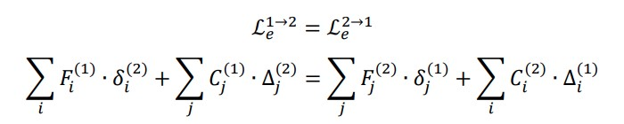
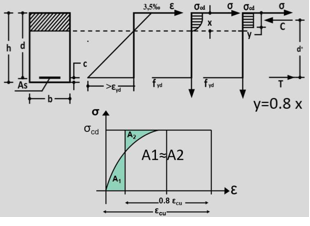

1.
Quale è stata l’evoluzione dei carichi da traffico sui
ponti nell’arco dell’ultimo secolo?
Sino all’anno 1980 i ponti stradali venivano
classificati in due categorie a seconda della loro ubicazione e del loro
utilizzo, laddove fossero ricaduti in categoria 1 allora i carichi da traffico
erano tarati sui mezzi militari dell’epoca altrimenti sui carichi degli
autocarri di trasporto dell’epoca, rispettivamente i valori erano di circa 60 t
per categoria 1 e 10 t per categoria 2.
A partire dagli anni 80 con l’introduzione di
un nuovo decreto ministeriale i carichi diventano non più reali ma
rappresentativi ed ideali con definizione dei carichi
a partire dalla lunghezza dell’impalcato e definizione di coefficienti
dinamici.
Nel ’08 con le nuove norme tecniche si
introducono gli attuali carichi da traffico, nuovamente non reali ma
rappresentativi ed ideali di una situazione di
traffico.
Le differenze tra i diversi approcci è stata valutata su un set di ponti a campate appoggiate
semplicemente e si è visto come in termini di momento ultimo l’azione di
progetto dell’epoca risulti mediamente inferiore del 35% per la sollecitazione
flessionale e del 10% per la sollecitazione tagliante.
2.
Carichi da traffico NTC18
Attualmente la normativa prevede la
suddivisione della piattaforma stradale carrabile in corsie convenzionali,
ciascuna da 3 m, su cui si vanno a definire i carichi da traffico, il tempo di
ritorno è pari a 1000 anni.
La corsia 1 presenta un carico tandem di 600
KN suddiviso su due assi da 300 KN con impronte da 150 KN di dimensione 40x40
cm, corsia 2 400 KN suddiviso su due assi da 200 KN, corsia 3 200 KN suddiviso
su due assi da 100 KN.
Le stese di carico sono invece
rispettivamente 9 KN/m^2 per corsia 1 e 2.5 KN/m^2 per le rimanenti corsie e
l’area rimanente.
In riferimento al capitolo II e V della
normativa i carichi andranno opportunamente disposti e combinati, ad esempio,
laddove si voglia massimizzare il taglio in appoggio per la verifica di ponti a
travata il carico tandem andrà posizionato in appoggio mentre laddove si voglia
massimizzare momento verrà disposto nella mezzeria dell’impalcato, entrambe le
operazioni andranno fatte per tutte le possibili corsie disponibili
sull’impalcato, ad esempio, su di un impalcato di 8 m vi saranno due corsie
convenzionali, la 1 con 600 KN + 9 KN/m^2 e la 2 con 400 KN + 2.5 KN/m^2, i 2 m
rimanenti sono considerati area rimanente la quale è caricata con 2.5 KN/m^2.
Particolare attenzione va fatta alla
disposizione trasversale del carico, non è detto che caricando tutte le corsie
simultaneamente si stia massimizzando la sollecitazione cercata, questo effetto
può essere approfondito e spiegato con l’effetto “Courbon”
3.
Quali sono i principali carichi da considerare su un
impalcato da ponte?
Le principali azioni da considerare su un
impalcato da ponte sono sicuramente:
·
Carichi
permanenti strutturali: peso impalcato
·
Carichi
permanenti non strutturali: pavimentazione, barriere, impianti
·
Carichi
da traffico
·
Vento
(Orizzontale e verticale con eccentricità B/4, EC2)
·
Termica
(se iperstatico)
·
Neve
Ulteriori carichi devono essere considerati
in altre verifiche locali inerenti l’impalcato:
·
Svio
per cordoli
·
Frenatura
e Centrifuga per dimensionamento e verifica appoggi
1)
Azioni sui ponti NTC2018
Ai sensi delle NTC2018, sono definiti,
oltre ai carichi permanenti strutturali e non strutturali, i seguenti carichi
accidentali:  azioni da traffico, che
tengono già conto del coefficiente dinamico, ripartite secondo 5 schemi di
carico tramite le corsie convenzionali, funzione della configurazione della
carreggiata sul ponte e da ripartire attraverso la pavimentazione e la piastra
ortotropa; un coefficiente di
amplificazione dinamica, da applicare solo nei punti di discontinuità quali i
giunti;
azioni da traffico, che
tengono già conto del coefficiente dinamico, ripartite secondo 5 schemi di
carico tramite le corsie convenzionali, funzione della configurazione della
carreggiata sul ponte e da ripartire attraverso la pavimentazione e la piastra
ortotropa; un coefficiente di
amplificazione dinamica, da applicare solo nei punti di discontinuità quali i
giunti;  azione di frenatura,
azione centrifuga , per ponti non rettilinei; azioni da vento e neve; azioni idrodinamiche per
pile in alveo; azioni termiche; azioni dovute alle azioni
sui parapetti e sistemi di ritenuta, per le quali, per le barriere pedonali si
ha un’azione diretta verso l’esterno di applicata ad almeno di altezza, mentre per le
barriere veicolari si ha un’azione orizzontale di , applicata a dalla sommità della
barriera e a non più di ; resistenze passive dei
vincoli, dovute ad attrito dei carrelli scorrevoli nei ponti a travata;
dopodiché si hanno azioni sismiche, per le quali i ponti sono molto poco
duttili, e sono quindi isolati sismicamente (alti periodi propri e alti
spostamenti, quindi giunti molto larghi), e eccezionali, dovuti ad esempio
all’urto di veicoli sulle sue pile, se queste sono non protette e si trovano a
meno di dal ciglio della strada
sotto al ponte.
azione di frenatura,
azione centrifuga , per ponti non rettilinei; azioni da vento e neve; azioni idrodinamiche per
pile in alveo; azioni termiche; azioni dovute alle azioni
sui parapetti e sistemi di ritenuta, per le quali, per le barriere pedonali si
ha un’azione diretta verso l’esterno di applicata ad almeno di altezza, mentre per le
barriere veicolari si ha un’azione orizzontale di , applicata a dalla sommità della
barriera e a non più di ; resistenze passive dei
vincoli, dovute ad attrito dei carrelli scorrevoli nei ponti a travata;
dopodiché si hanno azioni sismiche, per le quali i ponti sono molto poco
duttili, e sono quindi isolati sismicamente (alti periodi propri e alti
spostamenti, quindi giunti molto larghi), e eccezionali, dovuti ad esempio
all’urto di veicoli sulle sue pile, se queste sono non protette e si trovano a
meno di dal ciglio della strada
sotto al ponte.
2)
Verifiche di transitabilità ponti
Ai sensi delle linee guida per il rischio dei
ponti, nel caso in cui non possibile, a seguito di una verifica di sicurezza,
la condizione di operatività ai carichi verticali , si procede con quelle di transitabilità. La transitabilità si
divide in transitabilità di tipo I e di tipo II. Nella
transitabilità di tipo 1 verifico il ponte con i soli carichi statici delle
NTC2018 prendendo un tempo di riferimento pari a 5 anni, entro i quali devo per
forza adeguare l’opera. Se nemmeno questa verifica viene
soddisfatta, allora si procede con le verifiche di transitabilità di tipo II,
dove verifico il ponte con i carichi dal codice della strada, per i quali ho la
materializzazione fisica del veicolo. Ci sono quattro livelli di
transitabilità, a seconda di quanto limito i carichi. Il ponte può essere
limitato a veicoli pesanti, massimo (autocarri da cava),
veicoli intermedi fino a (autobus), veicoli leggeri
fino a (autocarri leggeri),
veicoli leggerissimi fino a (auto e furgoni). L’entità
della restrizione d’uso dipende ovviamente da quali carichi fanno sì che la
verifica di sicurezza risulti soddisfatta. In caso di limitazioni di massa, è
importante il controllo della massa dei veicoli in arrivo, poiché le azioni
vengono amplificate con un coefficiente funzione della qualità del controllo
della massa che scelgo di utilizzare, con tre livelli: assenza di monitoraggio,
controllo a campione, pesa dinamica. Migliore il controllo, minore il
coefficiente amplificativo, che va da ad . Come per la transitabilità di tipo I, anche qui devo adeguare
entro 5 anni.
3)
Principi della precompressione nel calcestruzzo
Le strutture in calcestruzzo hanno una grossa
criticità: il calcestruzzo non resiste a trazione, e questo limita le
possibilità costruttive di questo sistema. Ad esempio, in una trave appoggiata appoggiata caricata uniformemente, abbiamo un momento che
tende le fibre inferiori pari a , e ciò limita la luce delle travi che è possibile realizzare con
un calcestruzzo gettato in opera. Si è quindi pensato alla precompressione:
ossia, imprimo all’elemento in calcestruzzo, che produco in stabilimente, una
presollecitazione di compressione. Questo perché, dal domino MN, abbiamo che
una compressione aumenta il momento resistente di una sezione.
La precompressione viene applicata tramite delle barre, che possono essere
barre, ma di solito sono perlopiù fili avvolti in gruppi di 3 o 7 (trecce e trefoli)
di acciaio armonico, un acciaio con più carbonio rispetto a quello dolce,
quindi più resistente ma meno duttile.
Il cavo da
precompressione può venire tesato prima (pre-teso) o dopo il getto (post-teso). In quest’ultimo caso, il
cavo scorre all’interno di una guaina dove, al momento dell’applicazione del
carico, viene iniettata una boiacca cementizia per fare aderenza.
La precompressione può essere baricentrica (applica uno sforzo normale puro
alla trave) o eccentrica (sforzo normale eccentrico, più vantaggioso, perché
crea un momento flettente uniforme di segno opposto a quello che la trave
riceve quando soggetta a carichi verticali). Il cavo può essere rettilineo o
parabolico, quest’ultimo è più conveniente perché permette di far variare
l’eccentricità dello sforzo normale in modo da seguire il diagramma parabolico
dei momenti flettenti a carichi verticali, e perché si ha anche una componente
a taglio di segno opposto a quello che si avrebbe con i carichi verticali.
Tuttavia, il cavo parabolico può essere realizzato solo con il post-teso.
Si Illustrino i sistemi di precompressione del calcestruzzo armato, con relativi
vantaggi e svantaggi.
Nella pre-tensione le armature
vengono tese in stabilimento tra una testata fissa dove viene bloccato il cavo
e una testata mobile dove si applica il tiro tramite un martinetto. Si prepara
inizialmente la gabbia di armatura lenta, poi si tirano i cavi e si bloccano
tramite i cunei, e infine si chiude il cassero e si effettua il getto del
calcestruzzo; dopo un certo numero di giorni di maturazione si tagliano i cavi. All’atto del taglio
dei cavi questi tendono ad accorciarsi ma a causa dell’aderenza con il calcestruzzo,
trasferiscono la compressione alla trave.
Nel preteso l’andamento del cavo
può essere rettilineo oppure una spezzata se vengono inseriti dei deviatori che
si oppongono al riallineamento.
Un vantaggio è che avviene in un
ambiente controllato (stabilimento). Gli svantaggi sono il trasporto in
cantiere, e la possibilità di effettuare un'unica fase di tiro (non si possono
recuperare perdite di tensione con tiri successivi).
La post-tensione prevede una
testata di ancoraggio fissa ad un’estremità ed una testata mobile all’altra
estremità in corrispondenza della quale viene applicato il tiro tramite un
martinetto.
Le fasi di lavorazione sono le
seguenti: posare le guaine (tubi corrugati) con il cavo già inserito al loro
interno, posare le gabbie di armatura lenta, predisporre i casseri ed
effettuare il getto, dopo la stagionatura effettuare il tiro dei cavi con un
martinetto, ed infine iniettare le guaine con boiacca di cemento. I cavi si
bloccano grazie alla presenza di cunei di ancoraggio.
I vantaggi della post-tensione
sono la possibilità di applicare il tiro in fasi successive, e la possibilità
di ottimizzare il tracciato dei cavi, di solito parabolico.
Uno svantaggio è l’esecuzione in
un ambiente esterno non perfettamente controllato e la possibilità di presenza
di vuoti nelle guaine che facilitano infiltrazione di acqua e corrosione dei
cavi.
Come si definisce il sistema di forze
equivalenti alla precompressione?
Se il cavo è rettilineo
baricentrico il carico equivalente è una compressione uniforme.
Se il cavo è rettilineo
eccentrico il sistema equivalente è dato da una forza di compressione N ed una
coppia N*e.
La forma ottimizzata del cavo
dovrebbe seguire l’andamento del momento dovuto alle forze esterne: dove il
momento agente è maggiore si deve incrementare l’eccentricità del cavo; dunque,
la forma ideale del cavo per fronteggiare un carico uniformemente distribuito
sulla trave è la parabola. In caso di cavo parabolico il carico distribuito
equivalente alla compressione è q= 8fN/L2, mentre i carichi
equivalenti da considerare alle estremità sono sforzo normale Nn=N cosa=N e il taglio Vn=N
sena=4fN/L (a= angolo di inclinazione del cavo).
Se il cavo ha concavità verso il basso,
il carico equivalente distribuito è rivolto verso l’alto e dunque si oppone ai
carichi esterni.
Nel caso di cavo con andamento a
spezzata (pre-teso) nei punti di deviazione del cavo abbiamo due forze
dirette verso l’alto pari a N sena (a = angolo di deviazione del cavo).
Si illustrino i benefici della
precompressione sul comportamento a taglio.
Il primo è che l’inclinazione dei cavi in appoggio
produce una componente che si oppone ai carichi esterni detta controtaglio: Vn=N sena=ssp∞ Asp sena.
Il controtaglio è nullo quando il cavo diventa orizzontale, ovvero in mezzeria, tuttavia in questa zona il taglio sollecitante è
nullo.
Il secondo effetto benefico influisce sulla resistenza a
taglio.
Si consideri una sezione in c.a. ordinario: al di sotto
dell’asse neutro il calcestruzzo è fessurato e di conseguenza le tensioni
normali sono nulle, dunque il cerchio di Mohr è centrato nell’origine.
In una sezione in c.a.p. la
compressione aggiuntiva determina un abbassamento dell’asse neutro,
dunque le tensioni normali sono non nulle, e il cerchio di Mohr si
sposta a sinistra incrementando le tensioni principali di compressione e
riducendo quelle principali di trazione che si allontaneranno dunque dal valore
limite fct (resistenza a
trazione del calcestruzzo).
In queste condizioni per raggiungere la condizione limite
è necessario un carico molto più alto.
In conclusione
l’effetto della precompressione è benefico perché riduce le tensioni principali
di trazione.
4.
Effetti benefici della precompressione sulla resistenza a
taglio?
Lo stato tensionale indotto dalla
precompressione nelle travi dà un contributo positivo alla resistenza lato
calcestruzzo, questo effetto è determinato dal fatto che la presenza di
sforzo normale devia le tensioni principali ed in particolare diminuisce quella
agente sul cls.
In generale però non è detto che
quest’effetto assume in verifica un ruolo cruciale in quanto spesso nel caso di
ponti esistenti le verifiche sono governate lato acciaio e pertanto tale
contributo non porta a miglioramenti nella valutazione della sicurezza
utilizzando il modello a traliccio suggerito dalla norma; il motivo è legato al
diverso approccio che avevano le normative passate che conducevano le verifiche
a taglio con il metodo delle tensioni ammissibili e dunque valutavano le
tensioni taglianti in campo elastico.
5.
Perdite di tensione nel c.a.p. pre-teso
Nel sistema del cemento armato precompresso a
cavi pre-tesi
le perdite di tensione a cui la struttura andrà in contro sono:
PERDITE IMMEDIATE:
·
Perdite
per attrito nei cambi di direzione repentini tipici di questi sistemi
·
Rientro
dei cunei sul banco di tesatura
·
Rilassamento
acciaio per stagionatura accelerata del cls
·
Deformazione
elastica del cls al momento del trasferimento di
tensione
PERDITE DIFFERITE:
·
Ritiro
cls
·
Rilassamento
acciaio
·
Effetti
viscosi cls (Fluage)
6.
Perdite di tensione nel c.a.p.
post-teso
Nel sistema del cemento armato precompresso a
cavi post-tesi le perdite di tensione a cui la struttura andrà in contro sono:
PERDITE IMMEDIATE:
·
Deformazione
elastica del cls al momento del trasferimento di
tensione
·
Deformazione
elastica cls per tesature a tempi diversi
·
Attrito
·
Rientro
dei cunei sul banco di tesatura
PERDITE DIFFERITE:
·
Ritiro
cls
·
Rilassamento
acciaio
·
Effetti
viscosi cls (Fluage)
1.0.
TEORIA DELLE LINEE DI INFLUENZA
La linea di influenza è un
diagramma che mi dice, data la sezione S di mio interesse e definita la causa
(forza F), quale è l’effetto in S al
variare della posizione di F; per tale motivo il diagramma mi
deve dire, sezione per sezione,
l’effetto della forza quando occupa quella posizione in S; leggo
effetto sul diagramma.
-
MMAX nella sezione S, o in
un'altra sezione, quando la forza viaggiante è applicata direttamente in quella
posizione.
Le linee di influenza possono essere
determinate in 3 modi:
‘’Con
riferimento ad una sezione S,
caratterizzata dalla sua ascissa z, si definisce linea di influenza di un
qualsiasi effetto (spostamento o caratteristica) un diagramma che con le sue
ordinate lette in corrispondenza della generica posizione della causa (forza o distorsione) fornisce il valore
dell’effetto che si ricerca’’.
Le forze che stiamo trattando sono quelle
viaggianti sul mio ponte e voglio scoprire al loro passaggio quali siano gli
effetti generati in termini di sollecitazione, spostamenti, distorsioni,
reazioni vincolari e forze in una data sezione S; di questi valori sono
interessato ai massimi, perché sono determinanti per la progettazione e
verifica.
2.0.
TEOREMA DI BETTI GENERALIZZATO:
IL teorema generalizzato di BETTI, ci dice il
Lavoro esterno è uguale a quello interno:
-
Lavoro Esterno=Forza (F) x
Spostamento duali (δ)
-
Lavoro Interno =Sollecitazione (S o C) x
Distorsione corrispondenti (Δ).
Data una struttura in equilibrio con delle
forze date, comunque si assegni un campo di spostamenti piccolo a piacere
virtuali, deve risultare che il lavoro esterno, che compiono le forze per gli
spostamenti duali deve eguagliare il lavoro interno, che le sollecitazioni
compiono per le corrispettive deformazioni.
Se ci fossero anche cedimenti e distorsioni
dovremmo includere, anche il lavoro delle reazioni vincolari per i cedimenti e
le caratteristiche di sollecitazione per le distorsioni. Date 2 strutture identiche, in cui nella
prima ho un sistema forze e nel secondo sistema spostamenti posso dire che
eguaglianza dei lavori si traduce in: 
3.0.
CASI PRATICI:
Nei casi reali la teoria
delle linee di influenza assume particolare rilevanza circa l’applicazione dei carichi da traffico
verticali la cui intensità è fissata dalle norme (es vedi
schemi di carico NTC 2018 i e forze concentrate e carichi distribuiti).
Essendo i carichi da traffico carichi mobili
la loro posizione non è nota a priori ma deve essere determinata dal
progettista in maniera da determinare di volta in volta la condizione più
gravosa per la membratura in esame.
A rigore il problema
andrebbe affrontato attraverso lo studio di superfici di influenza anziché
linee di influenza, data la variabilità della posizione del carico sia in
trasversale che in longitudinale Nella pratica si disaccoppia il problema,
studiando separatamente gli effetti trasversali e quelli longitudinali.
Si tratta sempre di forza verticale
viaggiante il cui ente duale è l’abbassamento
Schema di trave continua su più appoggi
Momento in appoggio (2)
Il momento e forza sono stessa famiglia,
perciò applico una distorsione unitaria φ=-1 all’appoggio 2, ottengo la linea di
influenza, che mi dice che il momento è negativo all’appoggio.
Carico
le due campate adiacenti all’appoggio e poi alterno a scacchiera.
Qual
è l’utilizzo in ambito civile dei droni?
Negli ultimi anni, le
tecnologie legate allo sviluppo di sistemi APR hanno subito una impennata
rapidissima. In particolare lo sviluppo tecnologico
nell'ambito della sensoristica permette di equipaggiare APR con dispositivi in
grado di effettuare rilevazioni nello spettro del visibile (camere digitali
compatte o professionali) e dell'infrarosso (camere termiche), nonché camere
multi spettrali, fino ad arrivare a sensori più evoluti, ad esempio sensori Lidar
o per il monitoraggio della qualità dell'aria. Di seguito vengono presentati
alcune applicazioni in ambito civile per gli APR:
1.
Monitoraggio continuo delle strutture;
2.
Aerofotogrammetria e rilievo
dell'architettura;
3.
Monitoraggio ambientale e calamità naturali;
4.
Operazioni di ricerca e soccorso.
I limiti operazionali dei
sistemi APR risiedono nei Payloads (camere, radar) e nei Sistemi di
Navigazione. Tuttavia per migliorare questi ultimi
è possibile ricorrere ad un sistema RTK (Real Time Kinematic).
I componenti fondamentali di un sistema RTK sono stazione base (nota
anche come stazione di riferimento), ricevitore RTK, controller e
Satelliti. I principali vantaggi di un sistema RTK sono precisione
superiore, correzioni in tempo reale e meno punti di controllo a
terra.
Lezione 22 - SAVOLDELLI 18.11.2022
Sistemi digitali per il monitoraggio aereo
del territorio e delle infrastrutture
I sistemi tramite i quali è
possibile eseguire il monitoraggio aereo sono il satellite, l’aeroplano e il
drone, metodologie differenti ma complementari. Il satellite vola in orbita ad
un’altezza di 500 km ma riesce a sorvolare lo stesso punto solo per una volta
ogni tre mesi, mentre aeroplano e drone volano rispettivamente a quota 500-5000
metri e 120-150 metri con sorvolo a richiesta. L’ampiezza delle strisciate
varia dai 500 km per il satellite fino ai 500 metri per il drone per cui la
produttività di un sorvolo del drone è molto minore di quella di un aeroplano o
satellite, inoltre l’autonomia del drone è all’incirca di 50 minuti (autonomia
nominale che dipende da come ho effettivamente caricato lo strumento). Nei
rilievi o ispezioni con drone è possibile scaricare i dati in tempo reale se
nell’area è disponibile una rete wi-fi oppure i dati si scaricano con penna USB
al termine del volo. A seconda dell’informazione che si vuole acquisire, il
drone deve essere equipaggiato con apparecchiature aggiuntive. I principali
limiti nell’utilizzo del drone sono le condizioni meteorologiche e la richiesta
di autorizzazioni che prevedono tempi burocratici.
Applicazioni a valle del monitoraggio aereo
del territorio e delle infrastrutture
Il servizio di monitoraggio
aereo di corridoi autostradali o di qualsiasi infrastruttura a inviluppo
lineare può produrre ricchi dataset popolati da mappe digitali ad alta
risoluzione in grado di fornire ai gestori delle infrastrutture: la valutazione
e il controllo delle interferenze; un monitoraggio continuo delle strutture e
dei fenomeni idrogeologici; il controllo di difetti di superficie dimensione
centimetrica/millimetrica pixel; un monitoraggio delle operazioni
cantieristiche in corso; una gestione funzionale dell’infrastruttura con
pianificazione mirata degli interventi di manutenzione; la costruzione di un
archivio storico; il popolamento di una base dati GIS-BIM. L’adozione di una
piattaforma Web-GIS, ad esempio Pangea, consente la gestione e condivisione di
contenuti tele rilevati tra i tecnici del team delegato
al progetto, in modo semplice, rapido e poco costoso e consultabile anche in
campo, diventando anche strumento di supporto per le operazioni in sito.
Inoltre, consente di monitorare difetti e degrado con possibilità di
ripetizione dei rilievi su base trimestrale, semestrale o annuale.
Evoluzione regolamenti
normativi su attestati e certificazioni
L’ENAC è l’autorità
nazionale di sorveglianza di tutte le compagnie aeree e di tutti gli operatori
di droni che occupano lo spazio aereo. Fino al 2019 il regolamento nazionale
consentiva di volare con un attestato di pilota APR distinguendo tra operazioni
di volo critiche e non critiche. L’attestato poteva essere ottenuto tramite
corso ed esame teorico, una lezione di volo (erano disponibili centri di
addestramento APR) e c’era l’obbligo di visita medica. Nel 2019, invece, sono
stati introdotti due regolamenti europei 945 e 947: la 945 indica ai
costruttori come realizzare il drone per poter ottenere la marcatura CE, la
947, invece, definisce le regole su come far volare i droni. La modalità per
diventare pilota APR consiste in un test online senza obbligo della visita
medica. I centri di addestramento sono diventati Entità Riconosciute (ER) e
sono luoghi in cui potersi allenare. Il regolamento 639 descrive le norme e le
procedure per condurre un drone in scenari standard di volo.
Nella categoria “open”,
A1-A3, l’operazione deve essere a basso rischio, non c’è bisogno di
un’approvazione del piano di volo, la massa del drone deve essere inferiore a
25 kg, devo volare in vista ad un’altezza non superiore a 120 metri e si può
volare solo in alcune zone, entro certi limiti, individuate sulla piattaforma
d-flight. È vietato trasportare materiali pericolosi
o merci. L’addestramento è teorico, per sostenere l’esame sul sito dell’ENAC, e
non è previsto l’addestramento pratico. La formazione prevede nozioni di
sicurezza aerea, limitazioni dello spazio, come intervenire in caso di
malfunzionamento del drone o se si interrompe il data link. Nel caso in cui si rientra nella categoria “specific” (nel momento in cui si violano i limiti della
categoria “open”) per cui è previsto, ad esempio, un volo in cui il drone esce
dalla visuale dell’operatore allora bisogna chiedere l’autorizzazione all’ENAC.
C’è bisogno di passare dalle conoscenze di base ad uno più elevato (A2) in cui
si approfondisce il livello di rischio in funzione dell’ambiente in cui volo,
si impara a leggere una carta meteorologica, valutazione dell’area di volo per
individuare la presenza di eventuali interferenze elettromagnetiche nel
collegamento. La categoria “certified” è una vera e propria licenza di volo,
prevista per i piloti di aereo e air-taxi, quindi
quando è previsto trasporto di persone).
Cosa si intende per modello di rete?
I modelli di rete sono dei modelli analitici
(relazioni matematiche) che descrivono le infrastrutture fisiche nel ruolo che
esse svolgono per la comunità, i servizi di trasporto che su queste
infrastrutture esistono, le tariffe di uso di sistema.I modelli di rete permettono di calcolare:
●
Calcolare le prestazioni
di un sistema, ovvero quanto tempo si impiega per uno spostamento;
●
Calcolare i carichi di
traffico sulle infrastrutture, ovvero capire chi si deve spostare e cosa
sposta, cioè come si carica la rete.
Per modellare le reti di trasporto si necessita
dell’offerta di trasporto che è costituita da un modello topologico.
Su questo, che ci spiega
come ci si può muovere, vengono individuati altri modelli che evidenziano con
quali prestazioni ci si può muovere, e quindi definiamo:
●
un modello di
cogestione;
●
un modello di calcolo
dei costi di percorso;
●
un modello di
propagazione del flusso.
Che cosa è un grafo?
Il modello topologico viene rappresentato con
l’ausilio della teoria dei grafi. Un “grafo”
ci individua su quali elementi avviene la mobilità e come questi sono disposti
tra di loro. Esso è l’insieme di archi (componenti elementari) che succedendosi
definiscono i percorsi, e di nodi che sono i collegamenti delle componenti
elementari. Lo spostamento lungo gli archi è uniforme ovvero è a capacità di trasporto costante.
Il grafo si indica con “G” ed è un insieme composto da altri due insiemi ovvero
quello dei nodi e quello degli archi. Per
rappresentare i grafi ci sono diverse strutture matematiche come:
●
La matrice di adiacenza
nodi-nodi (ANN): in cui sia il numero di righe che di colonne è pari al numero
di nodi. In questa matrice nell’incrocio nodo-nodo (i,j) scriviamo “1” se l’arco esiste e “0” se l’arco
non esiste.
●
La forward-star
(FW-S), dove per ogni nodo si rappresenta la “stella in uscita” ovvero
l’insieme degli archi
in uscita dal nodo considerato.
●
la backward-star (BW-S)
in cui invece rappresentiamo la “stella in entrata” e quindi l’insieme degli archi in entrata nel nodo.
Qual è la differenza tra grafo e rete:
La rete è un grafo a cui si aggiunge
un’informazione ovvero l’impedenza ovvero il costo di uso degli archi. Il costo
di uso è inteso come costo monetario dato dal pagamento di una tariffa
autostradale e del carburante ma anche come “il tempo” per percorrere un tratto
stradale.
Il costo monetario e il tempo speso sono “gli
attributi di costo” che insieme consentono di ottenere il costo generalizzato
di trasporto. Quest’ultimo si ottiene dalla somma degli attributi di costo moltiplicati
per dei coefficienti che indicano il “peso” dell’attributo nel costo. Questo è
valutato su ogni ramo della rete e quindi per semplificare la connotazione si
utilizza l’algebra vettoriale e quindi una connotazione matriciale.
Gli Attributi di costo associati agli
archi dovrebbero essere considerati come grandezze
aleatorie, infatti, considerando l’attributo “tempo di percorrenza” si nota
come percorrendo più volte lo stesso tratto stradale si impiega un tempo
diverso. Inoltre, le grandezze “costi” e “attributi di costo” devono essere
considerate come i valori medi delle relative grandezze aleatorie.
Consideriamo la media perché esiste una dispersione dovuta non solo al fatto
che percorrendo più volte lo stesso tratto impiego tempi diversi ma anche
perché quel tratto di strada potrebbe essere percorso, sempre alla stessa ora,
da soggetti diversi che potrebbero avere velocità diverse. Dunque, la media è
relativa all’aleatorietà degli attributi di costo e alla dispersione dei valori
medi degli attributi di costo tra tutti gli utenti della rete.
Cosa si intende per fenomeno della congestione?
La congestione è un fenomeno che si verifica
quando la prestazione del sistema, per esempio il tempo, è variabile a seconda
degli utenti che utilizzano quel sistema, a seconda del flusso. Per i sistemi
di trasporto, finché si è lontani dalla capacità il tempo di percorrenza cresce
poco mentre quando si è prossimi alla capacità, la crescita del tempo diventa
sempre più importante e arrivati al valore di capacità il tempo diventa
infinito (asintoto verticale). Un esempio di fenomeno di congestione è rappresentato
dal modello di Greenshield dove la velocità cambia
con la densità. Se uno degli elementi del costo generalizzato ha il fenomeno
della congestione vuol dire che tutto il costo generalizzato è caratterizzato
da questo fenomeno.
Il vettore dei costi generalizzati, dipende dal
vettore che dice quali sono i flussi in quel momento sulla rete. Ogni arco è
caratterizzato da un costo di percorrenza e da un flusso relazionati fra di
loro da una funzione.
La funzione BPR (Bureau of public roads) è
costituita da una parte che rappresenta il tempo “t0” necessario a
cui si somma una parte in cui compare il flusso rapportato alla capacità. I
coefficienti α e β definiscono la forma; se α è molto grande il punto in cui la
curva inizia a salire è molto spostato verso l’inizio, se β è molto grande la
non linearità è molto accentuata. I due coefficienti, che sono numeri positivi,
si calcolano sperimentalmente. Se il tempo di percorrenza è costante il ramo si
dice non congestionato.
In termini generali, per qualunque arco, il
costo generalizzato di percorrenza dell’arco “a” è una funzione dei flussi di
tutta la rete, infatti, oltre al flusso sull’arco considerato bisogna tener
presente dei flussi sugli altri
archi con cui si interagisce.
1. Che
cos’è la teoria delle scelte discrete?
La
teoria delle scelte discrete viene utilizzata allo scopo di simulare un
disparato e vario tipo di scelte a cui possono trovarsi di fronte gli utenti di
un sistema di trasporto. Le scelte degli utenti sono essenziali perché
permettono di capire come nell’unità di tempo il numero di persone e/o veicoli
si distribuisce su un determinato percorso, andando a definire anche il costo
del percorso stesso. Si mettono in relazione, in pratica, i flussi con i costi.
Nello specifico, la teoria
delle scelte discrete afferma che esiste un decisore, ovvero la persona a cui
spetta la scelta, che conosce l’insieme delle scelte discrete (I) e ad
ogni alternativa generica (j) presente in questo insieme associa una
grandezza scalare definita utilità (Uj).
Il decisore ha un comportamento razionale:
-
Conosce tutte le alternative dell’insieme di
scelta;
-
Associa ad ognuna di esse l’indicatore della
valenza delle alternativa, cioè dice quanto vale
quella specifica alternativa;
-
Sceglie l’alternativa con l’utilità massima.
2.
Come si caratterizzano le utilità nei
modelli di scelta discreta?
Le utilità che vengono
associate alle varie alternative devono essere intese come delle grandezze
aleatorie, per cui i modelli che le utilizzano sono definiti modelli di utilità
aleatoria, perché assumono certi valori con una certa probabilità. Sono più precisamente
delle utilità percepite caratterizzate da una dispersione dovuta alla
circostanza. Infatti, per motivi di trattabilità analitica è opportuno che esse
siano scomposte in due aliquote: una è il valor medio dell’utilità percepita (Vj),
l’altra è la dispersione rispetto al valore medio ().
Tali utilità nella realtà
non esistono, sono delle semplici astrazioni che indicano quanto vale una
determinata alternativa e proposte da McFadden. Tuttavia le utilità di scelta possono essere espresse in
funzione di altre grandezze che vengono denominate attributi di scelta (X).
In termini analitici, quindi, si scrive:
Dove X è il vettore
degli attributi di scelta.
3.
Che cos’è il modello Logit-Multinomiale?
Il modello Logit-Multinomiale è il più semplice tra i modelli di
utilità aleatoria. Esso si basa sulle ipotesi che tutti gli elementi del
vettore dispersione
siano distribuiti in maniera identica ed
indipendente come variabili aleatorie di Gumble. La
funzione di densità di probabilità della Gumble
dipende sia dalla costante di Eulero (φ) sia da ϑ, definito come
parametro caratteristico della distribuzione perché al suo variare si possono
ottenere distinte distribuzioni di Gumble.
La prima ipotesi del modello
Logit-Multinomiale, ovvero identica distribuzione
degli elementi del vettore dispersione implica che le varianze di tutti gli
elementi siano identiche e pari a ;
la seconda ipotesi, invece, sta a significare che le covarianze siano nulle. Ne
deriva che la matrice di dispersione, ciò che rappresenta le caratteristiche di
una qualunque distribuzioni aleatoria, è una matrice diagonale con elementi
tutti uguali.
4.
Che cos’è la mappa di carico della rete?
L’interazione tra domanda ed
offerta di trasporto può essere interpretata dal punto di vista analitico con
la cosiddetta mappa di carico della rete. Infatti, se si compone il modello di
propagazione del flusso al modello del calcolo dei costi di itinerario, si
ottiene la relazione nota come mappa di carico della rete:
Questa
espressione ci permette di dire che, se conosco tutti i costi degli archi della
rete (vettore c), conosco anche i costi dei singoli percorsi e di conseguenza
le utilità associate ad ognuno di essi. Dunque, sono note le scelte e la
distribuzione degli utenti che, moltiplicate per il livello di domanda,
permettono di calcolare il flusso.
La mappa di carico della rete gode di
alcune proprietà. È una funzione costituita da funzioni continue, quindi
esprime essa stessa una funzione continua dei flussi di arco rispetto ai costi
di arco. Inoltre, è monotona crescente rispetto a tali costi di arco.
SEZIONE
IN CEMENTO ARMATO – FLESSIONE
1. Verifica
sezione in c.a. soggetta a flessione semplice:
Nel
caso di armatura semplice:
Ipotesi
di calcolo:
- Conservazione
delle sezioni piane;
- Perfetta
aderenza cls-acciaio;
- Calcestruzzo
non reagente a trazione;
- Crisi
per schiacciamento del cls;
- Armatura
in trazione snervata.
Esercizio:
Verificare trave 45x110 cm,
rendendola rettangolare, e calcolare quanto è in grado di portare.
B = 45 cm
H = 110 cm
As_sup = 2φ16
As_inf = 5φ22 +
3φ20
δ = 3 cm.
d = 107 cm
fcd = 28.45 MPa
fyd = 507.7 MPa

Si
procede col fare l’equilibrio della sezione, si calcolano le risultanti di
compressione e di trazione e quindi il momento resistente, quando il materiale
è andato in crisi.
La
parabola delle tensioni viene semplificata in un rettangolo che ha più o meno
la stessa area, lo stress-block, per fare ciò devo
prendere un rettangolo con altezza pari a 0.8x.
Prima
valuto la profondità dell’asse neutro:
dove
da
cui si evidenzia:
-
la percentuale geometrica di acciaio (quanto
acciaio c’è rispetto all’area di cls) ;
-
che moltiplicato per si ricava la ω, la percentuale meccanica di
armatura tesa;
quindi:
adesso
è possibile calcolare il momento resistente:
ricavabile
anche in maniera semplificata con la seguente formula:
È
possibile dimostrare che, assumendo , si
commette un errore trascurabile del 5%, accettabile e conservativo perché il
valore è più basso.
2. Verifica
sezione in c.a. soggetta a flessione semplice:
Analizziamo
la condizione in cui ho doppia armatura:
(ricordiamo
le seguenti condizioni):
-
acciaio snervato εs
≥ εsy
-
y=hω y=0.8x
-
Mrd = T(d-0.5y)
Una
formula veloce per valutare se l’armatura è snervata o meno è la seguente:
nel
progetto del nuovo, dove εs =1.86‰, se l’armatura compressa non è snervata y≤1.68c.
Un’altra
approssimazione che posso fare è considerare
Se
l’armatura fosse snervata
dove
ω’ è la percentuale meccanica di armatura compressa;
,
perché l’asse neutro si muove un po’ verso l’armatura, dove
, da
cui si ricava un momento resistente quasi identico a quello calcolato senza
considerare l’armatura superiore.
In
definitiva l’armatura compressa non contribuisce in maniera significativa alla
capacità resistente flessionale.
3. Incidenza
legami costitutivi
Considerare
il legame elasto-plastico porta a dei benefici, ma il
calcolo diventa più complesso, il materiale su cui puntare per avere un
incremento di resistenza è l’acciaio (dal legame elastico-lineare, mettendo
l’incrudimento dell’acciaio).
Tra fyd e fyt c’è un incrudimento, il
fattore che tiene conto di questo si chiama
che varia tra
,
ciò vuol dire che posso contare fino ad un 35% in più di acciaio.
Sicuramente
considerare l’incrudimento mi da’ vantaggio, ma non si raggiunge mai quel
massimo del 35%, quindi la scelta migliore sta sempre nel mezzo, questo perché
vorrebbe dire che quando il cls si rompe l’acciaio
dovrebbe stare al 6%, ma non ci sta, anzi ci sta solo quando l’asse neutro è
molto alto, cioè quando ho molto cls, ossia quando ho
una sezione a “T” molto larga, allora succede che l’asse neutro sale perché
l’area di cls è tanta, la rottura del cls è ferma al 3.5‰, la deformazione dell’acciaio è molto
grande, ma comunque non arriverò mai al 35%; difatti nella condizione di cls in crisi, l’acciaio sta vicino allo snervamento.
4.
Come valutare il momento
resistente di una sezione presso-inflessa?
Nell’ipotesi di
conservazione delle sezioni piane, di perfetta aderenza tra calcestruzzo ed
acciaio, di calcestruzzo non reagente a trazione, di crisi per schiacciamento
del calcestruzzo, nell’ipotesi di armatura tesa snervata εs
≥ εsy verificata se la profondità
dell’asse neutro y (legame rettangolo) è minore o uguale di 0.522d e
nell’ipotesi di armatura compressa snervata ε’s
≥ εsy verificata se la profondità
dell’asse neutro y (legame rettangolo) è maggiore o uguale di 1.68c, per
equilibrio alla rotazione della sezione il momento resistente allo SLU vale?
dove l’asse neutro y = h(ω – ω’ + ν) è
funzione di ν = Nsd / b h σcd
ovvero lo sforzo normale adimensionalizzato, ω ovvero la percentuale meccanica
di armatura tesa e ω’ ovvero la percentuale meccanica di armatura compressa. Lo
sforzo normale adimensionalizzato ν
indica lo scostamento tra la compressione agente (Nsd)
e la massima compressione sopportabile dal calcestruzzo (b h σcd).
5.
Come costruire il dominio di
rottura di una sezione presso-inflessa?
Nel caso di pressoflessione
retta è possibile individuare nel piano N, M una regione, denominata dominio
di rottura, la cui frontiera è costituita dai punti per cui si raggiunge la
rottura.
E’
possibile costruire un dominio di rottura semplificato determinando soli 5
punti. Considerando una sezione a doppia armatura simmetrica si definisce il
Punto A (Trazione Centrata) espressione della massima trazione sopportabile
dalle armature, il Punto B (Compressione Centrata) espressione della massima
compressione sopportabile dalle armature e dal calcestruzzo, il Punto C
(Flessione Semplice) espressione della massima flessione sopportabile dalla
sezione soggetta a sforzo normale nullo, il Punto E teoricamente espressione
della massima flessione sopportabile dalla sezione soggetta al massimo
contributo del calcestruzzo ed il Punto D (Massimo Momento) teoricamente
espressione della massima flessione sopportabile dalla sezione soggetta alla
metà del massimo contributo del calcestruzzo.
6. Cosa
si intende per duttilità e come si può incrementare?
La
duttilità è la capacità di sopportare deformazioni anelastiche senza eccessiva
riduzione della capacità portante e si può definire su più livelli: duttilità di materiale, definita dal
rapporto tra la deformazione ultima e quella di snervamento (in una sezione in
c.a. l’acciaio è più duttile del calcestruzzo), la duttilità di sezione, calcolata
a partire dal diagramma momento-curvatura della sezione, è definita dal
rapporto tra la curvatura ultima e quella di snervamento µ=ϕu/
ϕy
(quanto più questo rapporto è grande, tanto più la sezione è
duttile).
Per
aumentare la duttilità posso intervenire sui parametri che la influenzano:
caratteristiche del materiale, geometria della sezione, il quantitativo di
armatura e, nel caso di pilastri, la presenza di sforzo
normale. Nel caso di progettazione per aumentare la duttilità bisogna
ridurre armatura in trazione (l’asse
neutro sale, aumenta la tensione nell’acciaio che quindi si snerva prima che la
sezione si rompa) oppure si aumenta l’armatura
in compressione, che non mi dà un grande incremento di momento resistente,
ma mi permette di alzare l’asse neutro.
Lo sforzo normale non aiuta in termini di
duttilità perché a parità di εcu, l’asse
neutro scende, la tensione nell’acciaio si riduce, quindi si riduce la duttilità, infatti la norma limita il valore dello sforzo
normale: in classe di duttilità alta CD “A” max=0,55
mentre in CD “B” max=0,65.
Altrimenti
intervengo aumentano il confinamento che
aumenta la deformazione ultima del calcestruzzo εcu in modo che a rottura
l’acciaio sarà sicuramente snervato. Se aumento la deformazione ultima del
calcestruzzo, sicuramente aumento la curvatura ultima, quindi aumento la
duttilità µ=ϕu/ ϕy .
7. Quali
sono gli effetti del confinamento e come se ne tiene conto?
Il
confinamento permette di avere un incremento della capacità deformativa
degli elementi, senza una significativa variazione della capacità portante ed è
dunque benefico per la duttilità.
Questo
effetto viene garantito dalle staffe che circondando il calcestruzzo, che
contengono il possibile spanciamento e garantiscono
una deformazione maggiore.
La
norma tiene conto del confinamento andando a variare il legame costitutivo del cls: permette di incrementare la deformazione ultima
mediante un termine (che si somma alla deformazione ultima del cls non confinato) dalla percentuale meccanica di armatura
trasversale (rapporto tra il volume di staffe e il volume di calcestruzzo) e da
un parametro che dipende dall’efficienza delle staffe (sia
nella direzione longitudinale cioè dipende dal passo delle staffe, che in senso
trasversale, cioè presenza di spilli). Affinché il confinamento si possa
considerare efficace e quindi tener conto del termine aggiuntivo, le staffe
devono essere chiuse a 135°, deve esserci uno spillo almeno un ferro si e uno
no, la staffa non deve essere troppo lunga, le sezioni non devono essere troppo
allungate b/h<2,5 e il passo delle staffe deve essere adeguato, maggiore soprattutto nelle zone dissipative ,
tali da permettere la formazione delle cerniere plastiche.
8. Come
si calcola la capacità a taglio di elementi non armati a taglio?
La formula proposta dalle NTC 18 presenta vari
contribuiti:
- La base bw e
l’altezza utile d vanno ad individuare l’area efficace di calcestruzzo della
sezione;
- fck è elevato a
1/3 perché il calcestruzzo è soggetto a tensioni tangenziali;
- Il fattore k tiene conto dell’effetto ingranamento
degli inerti, in funzione dell’altezza della sezione;
- Il rapporto geometrico di armatura longitudinale tesa ρ1
tiene conto dell’effetto spinotto;
- scp = Ned/Ac tiene conto dell’effetto
benefico della compressione sulla resistenza a taglio.
La formula delle NTC per elementi non armati a taglio è
molto cautelativa quindi in molti casi le verifiche sui viadotti esistenti
risultano non soddisfatte, costringendo ad interventi molto invasivi e costosi
senza che ce ne sia la reale necessità.
Per questo motivo le Linee Guida ponti suggeriscono una
formula ricavata da una semplificazione conservativa delle SIA 262, meno
cautelativa della formula fornita dalle NTC18.
9. Perché
il modello a traliccio non è adatto a definire la capacità a taglio nelle
costruzioni esistenti?
Secondo il modello a traliccio variabile, la capacità a
taglio di un elemento è definita dal minimo tra Vrcd
e Vrsd., entrambi funzione della di cotQ. Considerando la capacità a taglio adimensionalizzata
si ottiene che la tensione di taglio-trazione trsd=
ωsw cotQ con ωsw percentuale meccanica di armatura
a taglio . Dal momento che nelle costruzioni esistenti
non si considerava l’azione sismica gli elementi tipicamente avevano poca
armatura a taglio.
Per ωsw<0,07 il
contributo dell’acciaio è sempre inferiore a quello del calcestruzzo,
quindi comanda trsd e l’elemento si
dice debolmente armato. In tal caso il valore di trsd
da considerare è con cotθ=2,5.
Per garantire un elevata
escursione in campo plastico (struttura in classe di duttilità alta oppure
struttura sottoposta a rinforzo) la norma impone di considerare cotθ=1; in caso di una struttura esistente, la resistenza
persa passando da cotθ=2,5 a cotθ=1
dovrebbe essere recuperata sovradimensionando di molto il rinforzo.
Questo ragionamento mette in luce come il modello a
traliccio non sia molto adatto a trattare le costruzioni esistenti.
10. Come
si calcola la capacità a taglio nelle costruzioni esistenti?
Le NTC2018 introducono la Formula di Biskinis
et al. che tiene conto della riduzione della resistenza a taglio per azioni
cicliche.
Questa formula prevede vari addendi: il contributo
benefico dello sforzo normale, e la somma dei contributi di calcestruzzo e
armature trasversali moltiplicata di un coefficiente di degrado anaelastico k= 1 – 0,05xmin(5;μDpl)
con μDpl=1- μD
e μD=Q/Qy.
In campo elastico la resistenza a taglio rimane
invariata, in campo plastico invece diminuisce linearmente fino a raggiungere
il 75% della resistenza iniziale.
La riduzione della resistenza a taglio in funzione della
duttilità è legata alla riduzione dei meccanismi resistenti a taglio
(ingranamento degli inerti ed effetto spinotto) per effetto del danneggiamento
del calcestruzzo.
La Circolare Esplicativa del 2019 fa delle ulteriori
precisazioni:
- Se μD<2 (escursione plastica minima) si
può prendere il massimo tra la formula di Biskinis ed
il traliccio ad inclinazione variabile;
- Se μD>3 (escursione plastica elevata) si
può adoperare direttamente Biskinis;
- Se 2<μD<3
si può interpolare tra i due valori ottenuti da Biskinis
e il traliccio a inclinazione variabile.
1)
Termodinamica della corrosione del ferro
La corrosione metallica è un processo di
reazione dei metalli puri con l’ossigeno atmosferico in presenza di acqua, che
crea ossidi che consumano il materiale e vi si depositano su di esso. Nel caso
del ferro, il processo è spontaneo in condizioni standard. Ipotizzando un caso
ideale di un pezzo di ferro puro bagnato da una goccia d’acqua a contatto con
l’aria abbiamo che nella goccia vi si discoglierà
dell’ossigeno per diffusione spontanea, poiché i sistemi tendono alla minima
energia e alla massima entropia (una reazione è spontanea
se, appunto , dove ). Si avrà quindi un gradiente di concentrazione di ossigeno
all’interno della goccia, dove sarà più concentrato al bordo della goccia e
meno concentrato all’interno. Poiché nel legame metallico gli elettroni sono
liberi, e nell’acqua ho dei legami polari, avrò che all’interfaccia del
materiale si creerà un condensatore: sull’interfaccia del ferro avrò gli
elettroni, mentre lato acqua avrò che le molecole si disporranno
con i loro dipoli positivi (gli atomi di idrogeno nella molecola ). Si crea quindi una differenza di potenziale, ossia una pila tra ferro e
ossigeno. Si chiude un circuito al bordo, dove ho maggior concentrazione di
ossigeno. L’ossigeno, che tende a prendere elettroni, prende gli elettroni dal
ferro al centro diventando e creano un ambiente basico
al bordo della goccia (l’ossigeno si riduce, parte catodica). Il ferro al
centro quindi si ossida (cede elettroni, parte anodica) e si discoglie in acqua
come ione ferroso o ferrico , che, legandosi poi con l’ossigeno disciolto crea ossidi di ferro,
ossia la ruggine, che si deposita ai bordi, mentre al centro, per effetto del
discoglimento del ferro, il pezzo di ferro si consuma. La reazione è elettrochimica,
perché lo scambio di elettroni avviene tra attraverso un mezzo conduttore, e
non avviene per contatto tra i reagenti. Il potenziale di reazione, valutabile
con la legge di Nernst, risulta positivo, quindi il
processo è spontaneo. Il potenziale è legato a tramite una relazione dove
compare il segno meno.
2)
Diagramma di Pourbaix
I diagrammi di Pourbaix
sono dei grafici che, dato un potenziale , un livello di , un metallo puro e un determinato ambiente, identificano delle
zone di comportamento di tale metallo all’interno di un diagramma -. Vengono generalmente identificate tre zone: una zona di
immunità, che si verifica per bassi valori del potenziale, una zona di
passivazione, dove gli ossidi depositati in superficie proteggono il metallo
sottostante da ulteriore corrosione, che si verifica per alti potenziali e alti
, e una zona di corrosione, ossia dove il metallo si consuma, che
avviene per alti potenziali e bassi .
[disegnare un
diagramma di Pourbaix tipico]
Nei diagrammi più complessi, si ha che all’interno della zona di passivazione
sono indicate delle sub-zone all’interno delle quali si formano i vari ossidi
di quel metallo.
Questi diagrammi sono solo teorici, tuttavia, vengono utilizzati in fase
progettuale per determinare come si comporterà un metallo in un dato ambiente
e, nel caso si ricadesse nella zona di ossidazione, valutare possibili
strategie per prevenire la corrosione, come una protezione catodica (abbasso il
potenziale), anodica (alzo il potenziale), o un cambio di dell’ambiente (questo
possibile, ad esempio, per i metalli impiegati nelle tubazioni dei circuiti
idraulici chiusi).
3)
Quali sono le tecniche di misura?
Tra le tecniche di
misura si distinguono in:
−
misura del potenziale di corrosione. Questa prova si basa sul testare un provino
grazie a delle celle grazie alle quali si ricrea l’ambiente in cui esso deve
lavorare. Dalla prova si ottengono le curve potenziale di corrosione-tempo.
Come si può osservare alcuni materiali fin da subito esplicano un comportamento
stazionario (rettilineo) mentre altri hanno bisogno di un certo tempo. Possiamo
dire che la superfice è così insensibile all’ambiente che fin da subito è in condizioni Mentre se il comportamento è frastagliato vuol
dire che sulla superfice del provino vi sono delle specie chimiche che
interagiscono in maniera molto veloce con l’ambiente esterno.
−
tecniche cronometriche. In questo caso si misura la corrente in
funzione del potenziale. Nell’istante iniziale della prova il sistema viene
eccitato, si porta in una certa condizione, e nel tempo l’andamento si porta
alle condizioni stazionarie, che individuano il valore di corrente per cui
l’elemento si protegge o si corrode.
−
Curve potenziodinamiche. In questa tecnica si sollecita in senso anodico
o in senso catodico il materiale, e quindi verso potenziali più positivi
rispetto il potenziale di corrosione, inducendo il materiale a corrodersi,
oppure verso potenziali più negativi, inducendo il materiale a comportarsi come
catodo. Da questa procedura si individuano due casi:
●
Nel primo caso, si
evince come aumentando il potenziale, con una certa velocità, la corrente
cresce e quindi il materiale si degrada, non forma lo strato protettivo di
ossido.
●
Nel secondo caso, il
materiale ha un comportamento attivo-passivo in cui al crescere del potenziale
il valore della corrente cresce fino ad un certo punto (comportamento attivo),
successivamente prima decresce (comportamento passivo) e poi resta pressoché
costante, con un valore della corrente basso, fino a che non cresce nuovamente
e velocemente con un tratto orizzontale. In questo caso, si forma uno strato
protettivo di ossido che gli consente di vivere nell’ambiente a cui è soggetto
anche ad elevate sollecitazioni generando una corrente estremamente bassa
(questo implica che lo strato di passività è molto protettivo). Successivamente
il valore di corrente cresce nuovamente e ciò si verifica perché aumentando il
potenziale stressiamo il film protettivo e ad un certo punto il campo elettrico
diventa così forte da perforarlo, portando alla formazione di “n” fori. Questo
processo di corrosione è problematico perché si svolge all’interno del
materiale e non all’esterno. Questa tipologia di corrosione si chiama per pitting o corrosione alveolare.
−
spettroscopia di impedenza elettrochimica. Questa tecnica ci consente di dividere a pezzi
il sistema, di selezionare i vari costituenti, e di analizzare singolarmente il
comportamento di questi (superfice del materiale o lo strato passività).
Tipicamente si considera il punto in cui il sistema si pone spontaneamente in
condizioni stazionarie (potenziale di corrosione) e si valuta come il sistema
si comporta al variare della frequenza di oscillazione della forzante.
Successivamente, la prova permette di individuare la corrente di corrosione
grazie al tracciamento delle rette di Tafel
(approssimazione di Tafel). La procedura si basa sul
fatto che il ramo catodico e quello anodico, per valori distanti da quello del
potenziale di corrosione, sono linearizzabili e
quindi si possono tracciare delle tangenti che devono intersecarsi in
corrispondenza del potenziale di corrosione ed in corrispondenza di questo
punto si legge il valore della corrente di corrosione.
4)
Quali sono le forme di corrosione?
La corrosione si
distingue in:
●
Corrosione uniforme o generalizzata. In questo caso le reazioni parziali provocano
un’omogenea dissoluzione del metallo e la formazione uniforme dei prodotti da
corrosione.
●
Corrosione localizzata.
La corrosione
localizzata in funzione del tipo di materiale si suddivide in due tipologie:
●
macroscopica ovvero osservabile facilmente ad occhio nudo. Esempi di questa
tipologia sono il pitting, crevice, fretting e l’erosione;
●
microscospica che necessita di ausili ottici per
l’individuazione. Esempi di questa tipologia sono la corrosione per fatica, per
hydrogen embrittlement che
si verifica quando i materiali sono a contatto con l’idrogeno e diventano duri
e fragili.
Corrosione da pitting
La corrosione alveolare (pitting) è una forma
di corrosione localizzata che determina la formazione di piccoli fori, definiti
alveoli o pits. Questa è tipica dei metalli con comportamento attivo-passivo, i
quali devono la loro resistenza alla corrosione ad un sottile strato di ossido
superficiale. Il processo inizia con una frattura locale dello strato passivo e
quindi si osserva una piccola zona anodica rispetto a tutto il resto che è
catodico. Il problema fondamentale risiede nel fatto che appare in superficie come piccoli puntini
mentre la quantità di materiale rimossa all’interno dei puntini è ignota.
All’interno dell’alveolo il materiale si trova nel suo stato attivo (non è
protetto) e interagisce con una soluzione che è molto più aggressiva di quanto
previsto perché ad esempio gli ioni Al3+ hanno la capacità di
scindere l’acqua e il fenomeno di idrolisi dell’acqua determina una variazione
del pH e tutto questo accelera il processo di corrosione. Inoltre, all’interno
c’è una soluzione che ad esempio contiene Al3+ che non è presente
fuori dall’alveolo e quindi si innesca il fenomeno della diffusione verso
l’esterno tentando di bilanciare la concentrazione, inoltre nell’alveolo il pH
è acido mentre fuori è neutro ciò provoca la precipitazione degli ossidi e
idrossidi sul perimetro dell’alveolo. Col tempo quindi il bordo dell’alveolo
tende a richiudersi e la soluzione interna diventa sempre più aggressiva:
questo è il meccanismo auto-accelerante del pitting.
Corrosione interstiziale (crevice)
La corrosione
interstiziale si verifica nelle crepe o negli interstizi che si formano tra due
superfici, dello stesso materiale, metalli diversi e persino un metallo ed un
non metallo. Essa ha origine dall’ingresso limitato di ossigeno dall’aria
attraverso la diffusione nell’area dell’interstizio. Praticamente, il materiale
che sta a contatto con la fessura da un lato ha molto ossigeno mentre
dall’altro ne ha poco e questo determina delle reazioni differenziali.
La tensocorrosione
La tensocorrosione
è una forma di corrosione che affligge i materiali quando contemporaneamente
sono sollecitati dal punto di vista meccanico e dal punto di vista chimico. Può
provocare un improvviso cedimento, soprattutto nei metalli duttili, per livelli
di sollecitazione molto inferiori alla tensione di snervamento. Inizialmente si
forma un alveolo che si evolve in una crepa, a causa di una sollecitazione
applicata o residua del materiale, che espone una nuova superficie attiva alla corrosione
e ciò provoca un’ulteriore propagazione della crepa.
Corrosione intercristallina (intergranulare)
La corrosione intercristallina è funzione delle caratteristiche del
materiale e segue la forma dei grani che costituiscono il materiale ed i
trattamenti termici possono essere utili per alleviare tale fenomeno. L’attacco
corrosivo avviene lungo un percorso molto ristretto, preferibilmente lungo i
confini della grana della struttura metallica. L’effetto più comune è una
rapida disgregazione meccanica (perdita di duttilità) del materiale
Corrosione galvanica (da contatto)
Si intende un danno da
corrosione quando due materiali dissimili hanno un contatto a conduzione
elettrica e sono a contatto con un elettrolita corrosivo comune. Generalmente
il metallo meno nobile viene dissolto (dissoluzione anodica), mentre la parte
più nobile non viene attaccata dalla corrosione. Risulta chiaro che il tasso di
corrosione del metallo meno nobile è superiore a quanto sarebbe in un ambiente
corrosivo libero, senza contatto con un altro metallo.
5)
Quali sono metodi di protezione dalla corrosione?
Indipendentemente dal
metodo di protezione proposto, questo deve essere affidabile, praticabile e economicamente
compatibile.
Per quanto riguarda i rivestimenti inorganici possono essere:
●
Banda stagnata (Tin
Steel): si tratta di un
sottile strato di acciaio su cui si deposita uno strato di stagno che è un
materiale più nobile del primo e quindi protegge meglio dalla corrosione. Il
problema risiede nel fatto che nel caso in cui vi sia
un foro sulla banda stagnata si espone lo strato sottostante che è anodico
rispetto a quello esterno;
●
LTS (Low Tin Steel): simili alla banda stagnata ma realizzati con
una tecnica diversa;
●
ECCS (Electrolytic Chromium – Coated Steel): si tratta di “film” differenti, cioè
sostanzialmente il rivestimento è di cromo. Tale soluzione è molto costosa.
●
Zincatura
Per quanto riguarda i rivestimenti organici (verniciatura), esistono un’infinità
di prodotti, tra cui le resine
epossidiche resine poliuretaniche e epossifenoliche.
I sistemi duplex sono dati dall’utilizzo concomitante di rivestimenti
inorganici e di quelli organici. La caratteristica principale di questa
soluzione risiede nel fatto che la somma delle resistenze alla corrosione dei
due sistemi, considerati singolarmente, è più bassa della resistenza globale.
Di questi si evidenziano:
●
Banda stagnata e
verniciata;
●
Alluminio anodizzato e
verniciato.
Infine, un ulteriore sistema di protezione sono gli strati di conversione. Praticamente
in caso di carichi chimici e fisici elevati si dispone di uno strato, che
consiste in un trattamento superficiale del materiale che converte la chimica
del materiale. In sostanza si depositano in soluzione acquosa dei sali sulla
superfice che consentono di elevare il potenziale della struttura grazie alla
formazione di una “barriera chimica” che impediscono il proseguire dei processi
di degrado. Tuttavia, questi sali devono essere protetti perché tale soluzione
spesso è solubile in acqua. Quindi lo strato di conversione è il primo strato
della struttura che poi deve essere verniciato.
6)
Quali sono le caratteristiche dei rivestimenti?
Da questi rivestimenti ci si aspetta
che abbiano come proprietà meccaniche
la deformabilità, la durezza e la gloss (ovvero
lucentezza e colore). Inoltre, questi devono essere caratterizzati da spessori ridotti in modo da ottenere un prodotto ottimizzato
anche economicamente, infatti, si vuole utilizzare meno materiale a parità di
condizioni. Infine, deve possedere proprietà
protettive come la proprietà barriera, anche definita
impermeabilità, indicativa della qualità del prodotto e della sua messa in
opera, l’adesione, indispensabile
perché altrimenti si stacca la barriera protettiva e impermeabile, la conformabilità e la
resistenza all’invecchiamento ad
esempio, dei raggi UV.
7)
Quali sono le caratteristiche e gli svantaggi dei rivestimenti
organici?
I rivestimenti organici
possono essere:
●
Polimeri termoplastici
●
Polimeri termoindurenti
I primi hanno la
caratteristica che possono essere riutilizzati, ovvero riciclati, semplicemente
riscaldandoli, cioè in seguito ad un trattamento termico. Mentre per i termoindurenti questo processo di riciclo non è
semplice, poiché quando si realizza l’oggetto vi sono piccoli composti organici
di basso peso molecolare che reagiscono tra di loro e formano una struttura
unica, che non può essere rifusa.
Uno dei problemi di questi
rivestimenti è il fenomeno del blistering, che
consiste nella formazione di rigonfiamenti (bolle) sulle strutture, e nel tempo
ad una delaminazione (processo auto-accelerante)
8)
Quali sono i test per la caratterizzazione chimico-fisica delle
vernici?
Vi sono diversi test che
si utilizzano per analizzare, in funzione delle prestazioni che il materiale
deve avere, il metallo, primer e i vari strati di vernice. Tra questi si
ricordano i test antifiamma per
valutare l’intumescenza che può essere raggiunta attraverso vari metodi,
infatti, ci sono vernici che quando bruciano non fanno molto fumo, sono
autoestinguenti, e questo perché si forma una crosta che non brucia e quindi
non emette gas. Un’altra tipologia di
vernice quando è soggetta ad un incendio rigonfia e protegge l’elemento su cui
è disposta
I Test di permeabilità che si effettuano per vedere quanta acqua e ossigeno passano. Poi
vi sono i test per verificare la
resistenza ai graffi, l’adesione, la deformabilità (la vernice deve seguire
la deformazione dell’elemento altrimenti si distacca), la durezza e la resistenza agl’uv.
Un ultimo test che si
menziona è il test in nebbia salina. Questo
test consta di macchinari simili a delle vasche in cui si inseriscono decine di
campioni su cui si spruzza una nebbia ovvero una soluzione di acqua e sale al
5% a 20°C e si osserva nel tempo. Quando il materiale è di ottima qualità
possono essere necessari anche dei mesi prima di vedere dei danni (formazione
di bolle, affioramento dei prodotti di corrosione), infatti, spesso per
velocizzare si effettuano delle incisioni sul provino inducendo il degrado.
Questo test presenta due importanti svantaggi:
●
La persona che osserva i
campioni dovrebbe essere sempre la stessa perché l’indagine ottica è
soggettiva.
●
necessita di molti
campioni per analizzare il prodotto perché ad esempio la verniciatura può non
essere costante.
Lo scopo è capire il
momento in cui si è innescato il blistering e quindi
valutare intrinsecamente la qualità del materiale. In ambito scientifico non viene più utilizzata perché il
risultato è troppo soggettivo e perché restituisce troppe poche informazioni.
9)
In cosa consiste la spettroscopia di impedenza elettrochimica?
Grazie a questa tecnica,
considerando un pacchetto costituito da metallo (ovvero interfaccia), strato di
conversione, primer e strato di verniciatura e riesco a capire ognuno di questi
in che condizioni si trova. In pratica, si legge il potenziale del materiale
rispetto ad un elettrodo di riferimento e su quel valore del potenziale di
applica una tensione alternata di piccola ampiezza (forzante sinusoidale). Con
questa tecnica si riescono a spezzare i vari strati che costituiscono il
provino e si riesce a trovare una corrispondenza fra il sistema fisico di cui
si conoscono le caratteristiche e un circuito elettrico equivalente che
descrive il comportamento del sistema reale ovvero ciascun elemento del
circuito (resistenze e condensatori) rappresenti uno degli elementi che formano
il sistema reale. La risposta del sistema viene rappresentata sui diagrammi di
Bode, ed in particolare in questi si evidenzia la relazione tra il modulo
dell’impedenza e del logaritmo della frequenza e si mostra la fase in funzione
del logaritmo della frequenza. Col tempo gl’elettroliti
iniziano a penetrare trai pori, quindi la corrente inizia ad “attraversare” il
materiale, e dai diagrammi si nota che la zona a bassa frequenza si abbassa e
quindi si ha un tratto resistivo iniziale, uno capacitivo e uno resistivo
finale. Infine, l’elettrolite arriva all’interfaccia
e si forma la corrosione quindi l’elemento si è deteriorato e la sua resistenza
è calata ancora di più. Infine, riportando le curve dal diagramma di Bode a
quello di Nyquist (in cui vi è la parte immaginaria)
si osservano degli archi di cerchio. Si noti che all’inizio, quando gli
elettroliti non ancora sono penetrati e che l’impedenza è elevata, si può
semplificare l’arco di cerchio in un tratto di retta. Poi, successivamente, man
mano che si riduce l’impedenza il semicerchio diventa sempre più piccolo.
10)
La tecnica della zincatura a caldo
La zincatura a caldo è una tecnica molto
utilizzata per proteggere i materiali metallici dalla corrosione. Esistono
diversi modi per riportare uno strato di zinco su una struttura in acciaio e
quello più utilizzato per strutture in ambito civile è la zincatura a caldo.
Fino a qualche tempo fa il processo era estremamente impattante per l’ambiente.
Negli ultimi anni l’attenzione verso l’ambiente, ma anche verso le maestranze,
è aumentata e negli impianti di nuova generazione non ci sono emissioni in
atmosfera grazie al recupero e al trattamento dei vapori. Quando si riveste con
un materiale organico una struttura metallica c’è un problema determinato
dall’adesione. Sono due materiali completamente diversi tra di loro, quindi il pre-trattamento
della superficie metallica deve garantire che l’adesione abbia certi valori.
Una particolarità dello zinco è che, essendo meno nobile del ferro, se si
procura un danneggiamento alla struttura, non ne consegue la corrosione
dell’acciaio sottostante. Lo stesso non accade con lo stagno, che è più nobile
del ferro. La struttura in acciaio deve avere dei fori opportunamente
posizionati per permettere che la zincatura avvenga sia all’esterno che
all’interno del tubolare.
11)
Corrosione delle armature
Il degrado delle strutture
in calcestruzzo armato può essere ricondotto a fenomeni di diversa natura:
meccanica, fisica, strutturale, chimica, biologica ed elettrochimica
(corrosione delle armature). In condizioni normali, all’interno di un manufatto
in cls è presente un ambiente alcalino caratterizzato
da un valore del pH=13. In tale condizione i ferri delle armature si
“passivano”, nel senso che si ricoprono di un film di ossido protettivo
impermeabile, che impedisce la reazione di ossidazione del ferro. La condizione
di passivazione può venire meno in seguito o alla carbonatazione del cls (a causa dell’anidride carbonica presente nell’aria) o
alla diffusione di cloruri (presenti prevalentemente nelle zone di mare).
L’ingresso di CO2 comporta una variazione del pH e l’innesco del fenomeno di
corrosione, a sua volta articolato in tre fasi: depassivazione,
propagazione e stato finale (coincide con scheggiature del copriferro e
fessurazioni all’interno del cls). Un metodo molto
semplice per capire qual è lo stato di avanzamento della carbonatazione è
irrorare la superficie del provino con fenolftaleina, le parti con pH basici
assumeranno una colorazione tendente al rosa e sarà quindi individuata la zona
affetta da carbonatazione. Si è visto sperimentalmente che uno spessore del
copriferro di 20-25 mm “protegge” la struttura dal fenomeno della
carbonatazione per un periodo ti tempo minimo di 20 anni.
5. Descrivere
l’approccio utilizzato dalle Linee Guida sui ponti
In
Italia le prime indicazioni specifiche sui ponti si sono avute con l’Ordinanza
3274 del 2003, ma si trattava ancora di indicazioni incerte e con una notevole
quantità di incertezze. Per questo motivo le Linee Guida per la classificazione
e la gestione del rischio, nonché la valutazione della sicurezza e il
monitoraggio dei ponti esistenti rappresentano un vero e proprio punto di
svolta.
L’approccio
utilizzato è definito multilivello e multirischio perché si parte dal livello 0
fino al livello 5 e l’assegnazione della classe di attenzione non riguarda solo
la parte strutturale, ma anche l’aspetto geotecnico, sismico e così via.
L’indice delle Linee Guida
rispecchia questo approccio. Nella Parte I vi è un Capitolo 2 dedicato al
censimento delle opere (Livello 0), uno dedicato alle ispezioni visive e schede
di difettosità, uno relativo al Livello 2 che riguarda l’analisi dei rischi
rilevanti e classificazione su scala territoriale. In poche parole, si spiega
in modo generale il metodo, ma poi si determina la classe di attenzione
rispetto a diversi aspetti (strutturale e fondazionale, sismica, rischio frane,
rischio idraulico…) per poi assegnare una classe complessiva. Il Livello 3 è la
valutazione preliminare dell’opera: si tratta di calcoli semplificati che
confrontano le sollecitazioni attuali rispetto a quelle dell’epoca con presunte
resistenze. Infine, il Livello 4 con la verifica dettagliata di sicurezza.
Esiste un’ultima parte che riguarda il sistema di sorveglianza, ma in
particolare il monitoraggio con prove di carico statiche e rilievi dinamici.
6.
Quali sono i livelli previsti nelle
Linee Guida?
Le
linee guida sui ponti esistenti prevedono 5 distinti
livelli per la classificazione e la gestione del rischio, nonché la sicurezza e
il monitoraggio.
Il
Livello 0 è la prima attività che le Linee Guida suggeriscono di avviare. Si
tratta della geolocalizzazione/censimento per fornire informazioni minime ed
indispensabili per indentificare innanzitutto il viadotto.
Il
Livello 1 riguarda le ispezioni e la redazione delle schede di difettosità. Non
è una novità perché la cosiddetta “sorveglianza” era una cosa che i gestori già
effettuavano in passato. In realtà, le Linee guida fanno riferimento ad un
periodo tipico di 3 mesi: in un anno gli ispettori devono visionare l’opera per
4 volte.
Il
Livello 2 comporta l’assegnazione delle 5 classi di attenzione (bassa,
medio-bassa, media, medio-alta, alta).
Una
volta stabilita la classe di attenzione si può procedere in modo differente:
- Se
si è in classe di attenzione bassa, il viadotto non è fonte di preoccupazione;
- Se
si è in classe di attenzione medio-bassa c’è un certo stato di allarme che
deriva anche dalla ispezioni periodiche;
- Se
si è in classe di attenzione media, bisogna sempre effettuare ispezioni
periodiche perché le schede di difettosità vanno continuamente aggiornate. Allo
stesso modo, gli interventi che vengono realizzati sui viadotti potrebbero far
retrocedere in positivo la classe di attenzione. Dunque, se la classe di
attenzione è media o medio-alta (soprattutto per quest’ultima), occorre
effettuare una valutazione preliminare. Si passa, dunque, al Livello 3;
- Se si è in classe di
attenzione medio-alta o alta si introduce il concetto di monitoraggio continuo
per controllare le condizioni del ponte. Per la classe di attenzione alta, in
particolare, si passa al Livello 4 (detto anche VAL4) che prevede una valutazione
accurata.
7.
Come si effettua la valutazione della
sicurezza?
Per la valutazione della
sicurezza bisogna richiamare alcuni concetti presenti nel Capitolo 8 delle
Norme Tecniche per le Costruzioni, ovvero il capitolo che riguarda le strutture
esistenti.
Si afferma che la
valutazione della sicurezza è un procedimento quantitativo perché bisogna
ottenere il cosiddetto livello di sicurezza. Esso viene indicato con la lettera
greca ζ e si fa riferimento a due diversi livelli di sicurezza:
in termini di PGA, quindi indica il livello di
sicurezza sismico;
in termini di carichi dovuti
ad azioni verticali, quindi è il livello di sicurezza per carichi
gravitazionali.
In
merito a la Norma afferma che, qualora la verifica non
risulti soddisfatta e si abbia un valore inferiore ad 1, bisogna
obbligatoriamente intervenire e si effettuano o restrizioni d’uso o di carico.
Per quanto riguarda  ,
invece, non c’è alcun vincolo.
,
invece, non c’è alcun vincolo.
Si segue questo approccio
perché per i carichi verticali non è ammesso il non soddisfacimento della
verifica perché si tratta di carichi di normale uso della costruzione. Sui
carichi eccezionali è vero che essi non sono applicati quotidianamente perché hanno
una probabilità di accadimento con un certo periodo di ritorno e vanno trattati
dal punto di vista statistico ma soprattutto si è consapevoli del fatto che le
verifiche sismiche non sono certamente soddisfatte per le strutture esistenti;
quindi, imporre l’obbligatorietà come per i carichi verticali sarebbe troppo
disastroso.
Lezione 4 – Prota (Normativa)
Evoluzione quadro
normativo italiano
1971: legge 1086 disciplinava le opere di
conglomerato cementizio armato normale e precompresso e quelle a struttura
metallica.
1974: legge 64 del 1974 disciplinava le costruzioni in zona sismica.
1981: D.M. 515 classificazione sismica del territorio sulla base di
indagini probabilistiche
1996: D.M. G.U. 29 in
zone sismiche è possibile adottare il metodo di verifica agli stati limite. La
Circolare del 1997 annessa a queste norme introduceva per gli edifici il
concetto di stato limite di danno.
2003: OPCM 3274 riclassificazione delle zone sismiche, sia
una introduzione più sistematica del metodo semiprobabilistico.
2008: NTC Metodo
semiprobabilistico agli stati limite, definizione mappa pericolosità sismica suddivide il
territorio con un reticolo di 5x5 km, ogni nodo è caratterizzato da un valore
di accelerazione, associato a una probabilità di occorrenza e tutto il Paese è
classificato come sismico. La riclassificazione è basata sia su dati storici
che su dati di ricerca geomorfologica del Paese, tutto fatto in modo
probabilistico.
Normativa costruzioni
esistenti - Capitolo 8 delle NTC
In quali casi è
obbligatoria la valutazione della sicurezza nelle costruzioni esistenti?
La valutazione della
sicurezza è un procedimento quantitativo volto a determinare l’entità delle
azioni che la struttura è in grado di sostenere con il livello di sicurezza
minimo richiesto dalla normativa. Al termine della valutazione bisogna
determinare se:
-
l’uso
può continuare senza interventi,
-
l’uso
deve essere modificato;
-
bisogna
eseguire interventi.
La valutazione della
sicurezza è obbligatoria quando si verifica:
-
riduzione
evidente della capacità resistente e/o deformativa
della struttura o di alcune sue parti dovuta a significativo degrado e
decadimento delle caratteristiche meccaniche dei materiali, deformazioni
significative;
-
danneggiamenti
prodotti da azioni ambientali, da azioni eccezionali o da situazioni di
funzionamento ed uso anomali;
-
provati
gravi errori di progetto o di costruzione;
-
cambio
della destinazione d’uso della costruzione
-
esecuzione
di interventi non strutturali, che interagiscono, anche solo in parte, con
elementi aventi funzione strutturale modificandone capacitò e rigidezza;
-
se
si eseguono interventi strutturali
-
opere
realizzate in assenza o difformità dal titolo abitativo, al momento della
costruzione, o in difformità alle norme tecniche per le costruzioni vigenti al
momento della costruzione.
Quali sono, secondo
le Linee Guida, le condizioni per garantire l’utilizzo dell’opera in sicurezza
qualora l’azione sopportata dall’opera è inferiore a
quella di progetto?
Se l’azione che il
viadotto può sopportare è inferiore a quella di progetto, le Linee Guida
prevedono delle condizioni per garantire l’utilizzo dell’opera in sicurezza:
l’operatività, la transitabilità da NTC e la transitabilità da CdS (da codice della strada).
Con l’operatività
uso gli schemi di NTC, con fattori parziali ridotti (riduco i carichi) e il
tempo di riferimento è 30 anni.
Se la verifica non è
ancora soddisfatta si passa alla transitabilità da NTC, uso gli schemi
di carico da NTC ma riduco i fattori parziali e introduco restrizioni
all’uso, il tempo di riferimento è 5 anni (il gestore ha 5 anni di tempo
per intervenire).
Se la verifica a
transitabilità 1 non è soddisfatta, si passa alla transitabilità 2:
eseguo la verifica con i carichi del codice della strada, (riduzione dei
carichi transitabili) si utilizzano fattori parziali ridotti e periodo di
riferimento di 5 anni.
Le Linee Guida danno
quindi la possibilità di utilizzare l’infrastruttura anche nel caso in cui le
verifiche non siano soddisfatte, riducendo il numero di corsie o i carichi.
Quali sono gli
interventi che si possono eseguire per migliorare la sicurezza nelle
costruzioni esistenti?
Si individuano le
seguenti categorie di intervento:
– interventi di
riparazione o locali: interventi che interessino
singoli elementi strutturali, riducono la vulnerabilità della struttura
prevenendo dei meccanismi locali, senza cambiare il comportamento globale. Non
è necessario obbligatorio eseguire verifiche globali dell’opera.
– interventi di
miglioramento: interventi atti ad aumentare la sicurezza strutturale
preesistente, senza necessariamente raggiungere i livelli di sicurezza fissati
dalla normativa;
– interventi di
adeguamento: interventi atti ad aumentare la sicurezza strutturale
preesistente, conseguendo i livelli di sicurezza fissati dalla norma.
Solo gli interventi
di miglioramento ed adeguamento sono sottoposti a
collaudo statico.
Gli interventi locali
possono consentire di effettuare un’azione di prevenzione del rischio sismico,
diffuso su un’ampia gamma di ponti. Poi, progressivamente, gli interventi di
miglioramento e poi quelli di adeguamento che sono quelli più rilevanti perché
richiedono tempi di esecuzione e costi più elevati.
Diversi sono gli
altri due interventi perché richiedono un calcolo sia prima che dopo
l’intervento in modo da misurare di quanto quell’intervento ha incrementato la
sicurezza della struttura. Il quanto è governato dalle norme: per gli
interventi di miglioramento nella combinazione sismica per le costruzioni di
classe III ad uso scolastico e quelle in classe IV, il valore di zE dopo l’intervento di miglioramento deve
essere portato almeno a 0,6 (questo vale quasi sempre anche per i ponti), se
non siete in quelle classi, la struttura si ritiene migliorata se il suo zE tra prima e dopo aumenta del 10%.
Struttura delle nuove
linee guida dei ponti esistenti
Le nuove linee guida sulla gestione
dei ponti esistenti si focalizzano sulla classificazione e gestione del
rischio, valutazione della sicurezza e monitoraggio dei ponti esistenti,
nascono dalla necessità di avere un riferimento unificato per i vari enti che
hanno in gestione queste tipologie di strutture. La norma segue un approccio
multilivello in cui ogni livello è successivo all’altro:
Livello 0 – Censimento delle opere
esistenti, l’ente gestore deve inserire in un apposito database tutte le
caratteristiche principali mediante raccolta delle informazioni e
documentazioni disponibili.
Livello 1 – Ispezione e redazione
delle schede di difettosità, per individuare lo stato di degrado e le
caratteristiche strutturali e geometriche di tutte le opere. Le schede
difettologiche indicano il peso, l’estensione e l’intensità del difetto e sono corredate
da una descrizione, cause e
foto che permettono al tecnico di effettuare la valutazione e compilare la
scheda di ispezione.
Livello 2 – Classi di
attenzione, che si basano su parametri di pericolosità, vulnerabilità ed
esposizione, si dividono in bassa, medio- bassa, media, medio-alta e alta. La Classe di Attenzione complessiva di un ponte
si ottiene combinando i valori assunti
da sotto-classi:
strutturale e fondazionale, rischio sismico,
rischio frane, rischio
idraulico. A seconda
della classe d’attenzione si prosegue con ispezioni
periodiche, oppure verso i livelli 3 o 4. Inoltre per
tutte le classi bisogna programmare interventi di manutenzione;
Livello 3 – Valutazione preliminare,
nel caso in cui ci sia una classe d’attenzione media o medio-alta, effettuando
ispezioni straordinarie per comprendere se sia necessario procedere ad
esecuzioni di verifiche accurate di livello 4;
Livello 4 – Valutazione accurata, nel
caso di una classe d’attenzione alta, effettuando un monitoraggio continuo. Da
questa valutazione emergono eventuali problematiche di operatività o
transitabilità;
Livello
5 – Resilienza della rete, applicato ai ponti considerati di significativa
importanza all’interno della rete.
Linee di influenza
Le linee di influenza
rappresentano uno strumento di analisi e calcolo fondamentale per la
determinazione della posizione del carico che massimizzi sollecitazioni e
spostamenti su di una struttura. Queste si basano sull’introduzione del Teorema
di Betti generalizzato: il lavoro mutuo tra due sistemi a comportamento
elastico lineare è il medesimo. Ciò vuol dire, che il lavoro che le forze
agenti sul sistema 1 compiono per gli spostamenti generati sul sistema 2, è
uguale al lavoro che le forze del sistema 2 compiono per gli spostamenti
generati sul sistema 1. Applicando questo principio, si può ad esempio
dimostrare che per conoscere quale sia la posizione di una forza viaggiante su
di una trave in grado di generare il massimo momento flettente in una predeterminata
sezione, allora è necessario risolvere uno schema strutturale che presenti una
distorsione angolare unitaria applicata nella sezione scelta (ente duale del
momento flettente) e valutare il diagramma degli spostamenti (ente duale della
forza viaggiante) che questa genera sullo schema. Si ottiene quindi un
diagramma le cui ordinate rappresentano il valore del momento flettente per la
sezione prescelta nell’ipotesi che la forza sia applicata in corrispondenza
della sezione in cui leggo l’ordinata del diagramma.
In campo infrastrutturale,
questo metodo ci consente, una volta definito lo schema strutturale di
riferimento, di prevedere quale sia la distribuzione di carichi maggiormente
sfavorevole, ad esempio, per il valore del momento flettente che si riscontra in
mezzeria di una campata di un viadotto, piuttosto che su di un appoggio di una
travata continua.
Perché si parla di CRITERIO di resistenza?
Quelle che si fanno comunemente per caratterizzare il
comportamento dei materiali, sono delle prove monoassiali,
ma lo stato di tensione reale nel generico punto di un oggetto non è monoassiale. Il criterio serve proprio per poter effettuare
un confronto tra queste due cose; viene creato pensando ad un modello di
comportamento a rottura che cerchi di capire perché si ha la rottura o
la plasticizzazione e chi è il “responsabile”
(se è ad
esempio la tensione tangenziale massima o quella media e così via). In questo
modo è possibile confrontare il risultato di una prova di tipo monoassiale con uno stato tensionale reale pluriassiale cercando di capire chi è il responsabile della
plasticizzazione, del collasso, della rottura.
Il modello deve anche essere rappresentativo del meccanismo
di rottura; per esempio il meccanismo di rottura che differenzia i materiali
fragili da quelli duttili è molto diverso: il materiale fragile si spezza in
maniera netta lungo la direzione principale di trazione, il che ci fa
immaginare che il responsabile della rottura sia la massima tensione, cioè la
trazione lungo quella direzione; una barra di ferro non si rompe di netto, ma
inclinata, la zona in cui si si localizza la deformazione è inclinata rispetto
al provino dai circa 45°, e questo è indice del fatto che sono le tensioni
tangenziali che implicano la rottura in un materiale duttile. Da qui nascono i
vari criteri che si utilizzano, a seconda del caso specifico.
Cos’è la torsione
secondaria e quando è importante tenerne conto? -SACCO
Frequentemente accade che la risultante dei carichi, cui
le strutture sono sottoposte, non passa per il centro di taglio e la
caratteristica di momento torcente risulta essere non nulla. Lo stato di
sollecitazione dovuto alla torsione può essere costante lungo l’asse della
trave o può variare da sezione a sezione: nel primo caso la torsione si
definisce uniforme, nel secondo si parla di torsione non uniforme. Mentre nelle
sezioni compatte l’effetto della torsione non uniforme può essere non
particolarmente importante ed è valida la soluzione della torsione alla De
Saint Venant, nel caso di impalcati da ponte o di
travi di bordo in sezione sottile, scatolare o aperta, comporta che i risultati
derivanti dalla teoria classica delle travi non siano più applicabili e qui la
teoria della torsione non uniforme permette di determinare l’aliquota di
torsione sopportata come torsione pura e quella sopportata come torsione
secondaria. Il problema della torsione non uniforme nasce in contrapposizione
alla teoria del De Saint Venant, il quale riesce a
risolvere il problema matematico nella ipotesi in cui l’ingobbamento
è assolutamente libero di esplicarsi e deve essere uguale in tutte le sezioni,
arrivando alla nota soluzione Θ = Mt /GJt con Θ angolo
unitario di rotazione e Jt fattore di rigidezza
torsionale. Ma se prendiamo e ne eliminiamo i moti rigidi e la rendiamo in
grado di rispondere al momento torcente, come un incastro, si capisce che nasce
un problema rispetto alla teoria del DSV in quanto la trave non riesce ad ingobbarsi ovunque. Impedendo questo ingobbamento
facciamo nascere delle tensioni spurie all’interno della trave, che si
sovrappongono a quelle legate alla torsione pura e rendono la trave in ogni
caso più rigida. Questa cosa non nasce solo quando c'è l'ingobbamento
impedito, ma nasce anche quando abbiamo dei carichi distribuiti lungo la trave
generanti un momento torcente non costante lungo l’asse della trave.
Cos’è la torsione primaria? Ipotesi alla
base, dimostrazione e risultati. - SACCO
Lo stato di sollecitazione dovuto alla torsione può
essere costante lungo l’asse della trave o può variare da sezione a sezione:
nel primo caso la torsione si definisce uniforme, nel secondo si parla di
torsione non uniforme. Per dimostrare i risultati che il De Saint Venant ottenne per la torsione uniforme è necessario
considerare un cilindro sollecitato da due coppie torcenti uguali ed opposte
alle due basi, mentre il mantello è perfettamente scarico. Si scrivono a questo
punto le equazioni relative al campo di spostamenti in cui abbiamo una
rotazione nel piano della sezione, attorno al centro di torsione, mentre nella
direzione longitudinale della trave lo spostamento risulta pari al prodotto di
una funzione di ingobbamento per un angolo Θ detto
angolo unitario di torsione (coincidente con la derivata prima della rotazione
sezionale nella direzione longitudinale). Dal campo di spostamenti è possibile
ricavare il campo di deformazione da cui si fa notare che la deformazione
longitudinale della generica fibra è nulla, ovviamente legata alle ipotesi alla
base del modello. Dal campo di deformazione si perviene al campo di tensione e
dall’equilibrio delle suddette tensioni si perviene al sistema di equazioni
detto problema di Neumann:
Si dimostra che la soluzione esiste e si fa notare che il
problema è semplicemente geometrico, ovvero per risolverlo non è necessario
conoscere il materiale della trave.
Teoria delle funi inestensibili e
allungabili.
Nel caso di una fune indeformabile assialmente soggetta
solamente ad un carico distribuito uniforme avremo che assumerà una certa
deformata e sarà soggetta solamente ad uno sforzo normale di trazione, la cui
componente orizzontale è detta tiro della fune e risulta costante. Dalle
equazioni di equilibrio è possibile ricavare un’equazione differenziale che ci
restituisce la soluzione dell’andamento del cavo che sarà funzione del carico
distribuito, del tiro della fune, della posizione e delle condizioni a
contorno. Per ottimizzare il cavo è possibile variare la sezione lungo il suo
sviluppo per ottenere una tensione normale costante su tutto il cavo, ma ciò implica
una variazione del carico distribuito lungo la x e la risoluzione
dell’equazione differenziale sarà fatta tramite metodi numerici. Nel caso in cui considero il cavo deformabile
assialmente la soluzione dell’andamento del cavo sarà funzione anche della
rigidezza EA del cavo stesso. Per poter arrivare all’equazione differenziale
possiamo assumere la relazione forza spostamento proposta da Hooke ovvero il
tiro del cavo è direttamente proporzionale all’allungamento tramite la
rigidezza EA.
Relazione Cavi e Archi
L’arco può essere visto come una catenaria rovesciata.
Questo vale anche per le cupole, se voglio ottenere solo sforzi membranali di
compressione, posso prendere una membrana e sottoporla ad un certo peso ed essa
sarà sottoposta a soli sforzi membranali di trazione e quella sarà la forma
ribaltata della cupola. Se l’arco avesse la forma della catenaria ribaltata
avrei solo N perché l’eccentricità è nulla. Se N non è completamente centrato
avrò un diagramma delle tensioni non più costante ma lineare. Se N rimane
all’interno del terzo medio, ovvero all’interno del nocciolo centrale
d’inerzia, avrò solo sforzo di compressione nella sezione dell’arco. Se
l’eccentricità eccede il terzo medio ho solo una parte dell’arco che mi lavora
a compressione. Se l’eccentricità esce
dalla sezione ho il collasso dell’arco. Perciò, se trovo una curva che mi
rimane all’interno del mio arco, esso non collassa. Più è bassa la curva delle
pressioni più è alta la spinta e di conseguenza carica maggiormente le
fondazioni. Più la curva è alta più è bassa la spinta alla base dell’arco. Nel
caso in cui siano presenti delle azioni sismiche avremo che dove la linea di
pressione tocca il bordo si formeranno le cerniere plastiche e questo può
trasformare la struttura in labile con conseguenti cinematismi di collasso.
Cosa è un conglomerato
bituminoso?
I conglomerati bituminosi
sono materiali compositi ottenuti dalla miscelazione di aggregati lapidei,
legante bituminoso, filler ed eventuali additivi. Il
campo di impiego più diffuso dei conglomerati bituminosi è di gran lunga quello
delle pavimentazioni flessibili o semirigide, sebbene siano da annoverare anche
altre applicazioni quali, per esempio i manti di ricoprimento di lastre rigide
in calcestruzzo (pavimentazioni composite) o i sub ballast ferroviari.
I conglomerati presentano
caratteristiche differenti in relazione allo strato della pavimentazione cui
sono destinati (base, binder e usura). Ciò in ordine a composizione,
caratteristiche volumetriche e proprietà meccaniche.
Come si misura la resistenza
a frammentazione, abrasione ed urto degli aggregati grossi?
La prova di riferimento si
basa sull’utilizzo dell’apparecchiatura Los Angeles (norma UNI EN 1097-2) e
riguarda esclusivamente gli aggregati grossi. Essa si svolge selezionando,
attraverso predefiniti criteri, un campione rappresentativo del materiale da
analizzare il quale è successivamente inserito all’interno del cilindro
metallico cavo disposto orizzontalmente e provvisto nella superficie interna di
un setto collocato sul piano diametrale lungo una generatrice. Unitamente agli
aggregati è inserita anche una carica abrasiva, formata da un numero
prestabilito di sfere metalliche di caratteristiche note. Al termine della
procedura il materiale di risulta è vagliato a un diametro di riferimento (1,60
mm); la parte passante è quella derivante dal progressivo processo di abrasione
e frantumazione subito dagli aggregati e rappresenta pertanto la perdita in
massa.
Come si classifica
empiricamente un legante bituminoso?
Le prove di tipo empirico
(prova di penetrazione, prova di rammollimento, prova di rottura, ecc.), alle
quali si associa una impostazione di tipo prescrittivo, permettono di
individuare i sistemi di classificazione del bitume. La prova di penetrazione
classifica i bitumi di uso stradale ed è finalizzata a trarre indicazioni sulle
caratteristiche del bitume alle temperature di servizio intermedie. La prova di
rammollimento classifica i bitumi di uso stradale ed è finalizzata a trarre
indicazioni sulle caratteristiche del bitume alle alte temperature di servizio.
La prova di rottura classifica i bitumi di uso stradale ed è finalizzata a
trarre indicazioni sulle caratteristiche del bitume alle basse temperature di
servizio.
Descrivi la prova di
penetrazione
La prova di penetrazione
classifica i bitumi di uso stradale ed è finalizzata a trarre indicazioni sulle
caratteristiche del bitume alle temperature di servizio intermedie.
La prova è effettuata alla
temperatura di 25°C facendo agire una punta in acciaio di dimensioni standard
per 5 secondi sotto l’azione di una massa pari a 100 g. Al termine della prova
si misura l’affondamento della punta in acciaio nel bitume esprimendo il
risultato in decimi di millimetro dmm (ad esempio un
bitume 80/100 ha una penetrazione compresa tra 80 dmm
e 100 dmm).
Descrivi la prova di
rammollimento – Palla & Anello
Il bitume, colato in due
anelli metallici (diametro interno = 15,88 mm), è riscaldato alla temperatura
di 5°C. Sopra i campioni sono poste due sferette metalliche (diametro = 9,53
mm).
La prova consiste
nell’innalzare la temperatura con un gradiente costante uguale a 5°C/min fino a
che il bitume, per effetto delle deformazioni plastiche causate dal peso delle
sferette, arriva a toccare un piano formato da una barra metallica posta alla
distanza di 25,40 mm dagli anelli.
La temperatura alla quale
corrisponde il contatto tra bitume ed il piano prende il nome di temperatura di
rammollimento. In genere i bitumi con penetrazione maggiore hanno il valore di
P&A più basso.
Descrivi la prova di rottura
Fraass
La prova è finalizzata a
trarre indicazioni sul comportamento del bitume alle basse temperature di
servizio per T < 0°C. Il bitume tende a indurirsi alle basse temperature
fino a diventare fragile.
Una pellicola di bitume
dello spessore di 0,5 mm è stesa su lastrine di acciaio. La lamina è poi
introdotta in un vaso Dewar e inflessa a intervalli regolari mentre la
temperatura si abbassa con un gradiente termico di
-1°C/min. La prova termina quando il velo di bitume, in seguito all’inflessione
della piastrina, si fessura.
Si definisce punto di
rottura Fraas la temperatura alla quale la pellicola
di bitume presenta la prima screpolatura (lesione).
Domanda n°1: quali sono le tipologie di
invecchiamento di un bitume? E quali sono le cause?
L’invecchiamento di un bitume può essere a breve e a
lungo termine; l’invecchiamento a breve termine avviene a causa del passaggio
dalla raffineria all’impianto di conglomerato bituminoso in cui viene stesa la
miscela, mentre l’invecchiamento a lungo termine avviene una volta che il
conglomerato viene messo in esercizio, a causa del passaggio dei veicoli
(avviene entro 5-10 anni dalla sua messa in esercizio). Tra le cause
dell’invecchiamento vi è la volatilizzazione, ossia la perdita delle componenti
più leggere del bitume, quindi inizia ad ossidarsi a
contatto con l’aria, e la polimerizzazione, che va a modificare la composizione
molecolare del bitume restituendo comportamenti meccanici differenti.
Domanda n°2: perché è importante conoscere la
viscosità di un bitume? Quali sono le caratteristiche da tenere in conto di un
bitume?
È importante conoscere la viscosità del bitume poiché
tramite essa io posso capire qual è la temperatura di rammollimento e in
funzione di essa posso stabilire la temperatura con cui lavorare in fase di
miscelazione del bitume, in modo tale da non superarla, evitando così un
invecchiamento precoce, e da garantire una certa fluidità alla miscela; la
condizione di fluidità rappresenta il presupposto necessario per procedere alla
miscelazione del bitume con gli aggregati lapidei all’atto della produzione del
conglomerato bituminoso. Occorre garantire infatti un ricoprimento uniforme dei
singoli granuli evitando fenomeni di separazione o ricoprimento parziale, che
potrebbero inficiare l’azione legante. La temperatura ottimale di miscelazione
corrisponde pertanto a un valore predefinito di viscosità che è una grandezza
tipica che contraddistingue ciascun legante e che va determinata nella sua fase
di caratterizzazione prestazionale.
Altre caratteristiche da considerare sono: duttilità, che
mi consente di conoscere il gradiente di deformazione che porta a rottura il
bitume; angolo di fase, che tiene conto del fatto che, quando un bitume è
sottoposto a un carico, non si deforma istantaneamente ma la risposta deformativa è ritardata nel tempo di una quantità pari
proprio all’angolo di fase; deformabilità, che tiene conto dell’accumulo di
deformazione (permanente) della pavimentazione a causa dei cicli di
carico-scarico dovuti al traffico veicolare.
Domanda n°3: che cosa si intende per
“fresato”?
Il fresato è un materiale che deriva dalla “fresatura”,
una tecnica che consiste nel rimuovere uno strato di pavimentazione, tramite
dei mezzi chiamati appunto frese; dopo la rimozione, viene trasportato su dei
camion e allontanato. Per definizione, il fresato è il conglomerato bituminoso
di recupero e non lo posso reimpiegare senza applicare dei trattamenti
disciplinati da specifiche normative. Infatti, una volta che l’ho prelevato dal
sito, devo sottoporlo a dei test di rilascio ambientale, che consistono nel
mettere delle provette di materiale in acqua, aspettare tot giorni e leggere
quanti nitrati, cloruri, cianuri o solfati rilascia; questi valori poi li
confronto con i limiti imposti dalle normative di riferimento e, affinché il
test abbia esito positivo, devono essere soddisfatti tutti i limiti.
Domanda n°1: quali sono gli obiettivi del
sistema stradale?
Il sistema di
trasporto può essere definito come l’insieme di componenti e loro interazioni
che determinano la domanda di spostamenti tra punti diversi del territorio e
l’offerta di infrastrutture e servizi di trasporto per il
soddisfacimento di tale domanda. Volendo schematizzare quali sono gli obiettivi
del sistema stradale, possiamo suddividerli in due categorie: aspetti da
minimizzare e aspetti da massimizzare. Aspetti da minimizzare:
-
impatto ambientale,
cioè l’alterazione qualitativa e/o quantitativa, diretta e indiretta, a breve e
a lungo termine, dell’ambiente in conseguenza alla realizzazione di un’opera;
-
costi dell’opera,
intesi sia come costi di realizzazione che di gestione
Tra gli aspetti da massimizzare abbiamo:
-
soddisfacimento della domanda di
mobilità, che dipende principalmente da due aspetti, ossia la
mobilità e l’accessibilità, e nel perseguire tale obiettivo risulta
fondamentale un bilanciamento tra i due aspetti, favorendo l’uno o l’altro a
seconda del tipo di infrastruttura (ad esempio, in un’autostrada voglio
favorire di più la mobilità e di meno l’accessibilità, al contrario in una
strada di quartiere preferisco garantire più accessibilità al territorio e meno
mobilità);
-
qualità della circolazione,
che dipende da velocità media di viaggio, tempo di viaggio, percentuale di
tempo speso in coda e comfort di viaggio;
-
sicurezza della circolazione,
che rientra tra le finalità primarie e di ordine sociale ed economico
perseguite dallo Stato (definizione da CdS),
-
affidabilità del sistema,
che riguarda sia la funzionalità statica, cioè l’attitudine di una
infrastruttura di svolgere le funzioni per cui è stata progettata e realizzata,
sia la qualità della circolazione;
-
qualità estetica,
che comprende vari aspetti tra cui l’integrazione
della strada nel paesaggio, la congruenza dell’infrastruttura con l’ambiente
circostante, etc.
Domanda n°2: qual è la definizione di
autostrada secondo il Codice della Strada? Quali sono le dimensioni minime
previste?
Secondo il Codice della Strada, l’autostrada è una strada
extraurbana o urbana a carreggiate indipendenti o separate da spartitraffico
invalicabile, ciascuna con almeno due corsie di marcia, eventuale banchina
pavimentata a sinistra e corsia di emergenza o banchina pavimentata in destra,
priva di intersezioni a raso e di accessi privati, dotata di recinzione e di
sistemi di assistenza dell’utente lungo l’intero tracciato, riservata alla
circolazione di talune categorie di veicoli a motore e contraddistinta da
appositi segnali di inizio e fine. Le dimensioni minime previste dal CdS per un’autostrada sono: corsie 3.75 m, banchina in dx
3.00 m, banchina in sx 0.70 m, spartitraffico 2.60 m.
Domanda n°3: quali sono gli elementi della
sede stradale? Descrivere in breve la loro funzione.
Gli elementi dello spazio stradale sono:
- corsia:
parte longitudinale della strada, normalmente delimitata da segnaletica
orizzontale (che non è obbligatoria nelle strade locali), di larghezza idonea a
permettere il transito di una sola fila di veicoli. Esistono varie tipologie di
corsie: corsia di marcia; corsia riservata; corsia specializzata; corsia di
emergenza;
- carreggiata: la
parte della strada destinata al transito dei veicoli; essa è composta da una o
più corsie, è pavimentata ed è delimitata da strisce di margine (segnaletica
orizzontale);
- banchina:
parte della strada, libera da qualsiasi ostacolo (segnaletica verticale,
delineatori di mergine, dispositivi di ritenuta), compresa tra il margine della
carreggiata e il più vicino tra i seguenti elementi longitudinali: marciapiede,
spartitraffico, arginello, ciglio interno della
cunetta, ciglio superiore della scarpata nei rilevati. Si distingue in banchina
in destra, con funzione di franco laterale destro, e banchina in sinistra,
parte pavimentata del margine interno;
- spartitraffico:
parte non carrabile del margine interno o laterale, destinata alla separazione
fisica di correnti veicolari; esso comprende anche lo spazio destinato al
funzionamento dei dispositivi di ritenuta;
- marciapiede è
la parte della strada, esterna alla carreggiata, rialzata o altrimenti
delimitata e protetta, destinata ai pedoni;
- confine
stradale: limite della proprietà stradale quale risulta dagli
atti di acquisizione o dalle fasce di esproprio del progetto approvato. In
mancanza, il confine è costituito dal ciglio esterno del fosso di guardia o
della cunetta, ove esistenti, oppure dal piede della scarpata se la strada è in
rilevato, dal ciglio superiore della scarpata se la strada è in trincea;
- fascia
di pertinenza: striscia di terreno compresa tra la
carreggiata più esterna e il confine stradale; è parte della proprietà stradale
e può essere utilizzata solo per la realizzazione di altre parti della strada.
La sede stradale è la
superficie compresa entra i confini stradali. Riguardo i margini, si
differenziano in margine interno, parte della piattaforma che separa
carreggiate percorse in senso opposto; margine esterno, parte della sede
stradale, esterna alla piattaforma, nella quale trovano sede cigli, cunette, arginelli, marciapiedi e tutti gli elementi di sicurezza o
di arredo; margine laterale, parte della piattaforma che separa
carreggiate percorse nello stesso senso.
LA
CLASSIFICAZIONE DELLE STRADE
Quali
sono le differenze tra le varie tipologie di intersezione?
Le intersezioni stradali si dividono principalmente in
due tipologie: intersezioni a raso e intersezioni a livelli sfalsati. Le
intersezioni a raso si dividono al loro volta in: non controllate, regolate da
precedenza, semaforizzate e rotatorie. Le intersezioni non controllate sono
regolate dalla precedenza a destra come indicato dal Codice della Strada, il DM
19.4.2006 sconsiglia il loro utilizzo richiedendo una gerarchizzazione delle
manovre. Le intersezioni regolate da precedenza sono regolate da segnaletica
fissa che può essere di “dare precedenza” e di “stop”. La prima obbliga gli
utenti a dare precedenza ai veicoli sulla strada principale, la seconda obbliga
gli utenti a fermarsi e dare precedenza. Nel caso di intersezioni semaforizzate
la segnalazione è di tipo variabile tramite dei semafori che gestiscono i
flussi veicolari. Le intersezioni a rotatoria sono caratterizzate dalla
circolazione a senso unico antiorario intorno ad un’isola centrale di traffico
e con la regola che i veicoli in ingresso devono dare la precedenza ai veicoli
circolanti nell'anello. Le intersezioni a livelli sfalsati servono per
collegare due strade poste su livelli altimetrici diversi e sono chiamati
svincoli quando le correnti veicolari delle due strade non si intersecano tra
loro.
Quando
utilizzare un’intersezione rispetto ad un’altra?
Il DM 19.4.2006 definisce per ogni categoria di strada le
tipologie di intersezioni ammissibili. Per le autostrade e per le strade
extraurbane principali si utilizzano intersezioni a livelli sfalsati con corsie
di immissione e diversione tramite l’utilizzo di rampe che possono essere
dirette, semidirette o indirette. Per le altre strade in cui sono ammesse le
intersezioni a raso la scelta della tipologia di intersezioni è legata a vari
aspetti, tra cui il rapporto tra i flussi veicolari delle due strade, la
presenza di pedoni e le distanze di visibilità. Le intersezioni non controllate
sono da evitare. Nel caso in cui la strada principale presenta un flusso molto
superiore a quello della secondaria, per esempio 95% del totale, la scelta può
ricadere sulle intersezioni regolate da precedenza. In questo caso si valuta se
è garantita la distanza di visibilità minima richiesta da normativa per poter
utilizzare l’intersezione regolata da “dare precedenza”, se non garantita si
valuta se è sufficiente per l’intersezione regolata da “stop” in caso contrario
si ricorre all’intersezione semaforizzata. L’intersezione migliore in termini
di sicurezza e capacità è la rotatoria che però non sempre risulta realizzabile
per motivi economici e di spazio.
Intersezioni
a rotatoria, vantaggi e svantaggi.
Le rotatorie sono intersezioni a raso caratterizzate
dalla circolazione a senso unico antiorario intorno ad un’isola centrale di
traffico e con la regola che i veicoli in ingresso devono dare la precedenza ai
veicoli circolanti nell'anello. Uno dei vantaggi principali del suo utilizzo è
legato alla sicurezza stradale. La rotatoria garantisce delle velocità ridotte
rispetto alle altre intersezioni soprattutto grazie alla presenza dell’isola
centrale che, se ben dimensionata, obbliga l’utente a percorrere una curva. Un
aspetto fondamentale sono i punti di conflitto dell’intersezione che nella
rotatoria, rispetto ad un’intersezione a quattro braccia, oltre a ridursi di
numero si riducono anche di gravità essendo punti di conflitto di diversione e
immissione, ovvero con angoli di impatto contenuti. Oltre al miglioramento
della sicurezza la rotatoria garantisce un miglioramento funzionale
dell’intersezione aumentando la capacità e riducendo i ritardi sui rami
secondari. La rotatoria elimina la svolta a sinistra, obbligando tutti i
veicoli ad effettuare unicamente manovre di svolte a destra. Altri vantaggi
sono il miglioramento ambientale ed estetico. Gli svantaggi legati all’uso
della rotatoria è che: costituisce un ostacolo per i pedoni e ciclisti,
richiede uno spazio maggiore rispetto alle altre intersezioni e ha un costo
economico superiore.
INGEGNERIA
DEL TRAFFICO
I
parametri del deflusso
I parametri principali del deflusso sono il tasso di
flusso, la capacità, la velocità e la densità.
Il tasso di flusso è un volume teorico calcolato come quattro volte il
volume di traffico del quarto d’ora più caricato passante per una data sezione
all’interno di un’ora, esso rappresenta la domanda di traffico. La capacità è
il massimo tasso di flusso smaltibile da una strada, rappresenta l’offerta. Il
flusso può essere saturo o non saturo. Per il calcolo della domanda solitamente
si fa riferimento al volume della 30-esima ora di punta. La velocità del flusso
può essere espressa come velocità media nello spazio o nel tempo, solitamente
si fa riferimento alla prima che è data dal rapporto della lunghezza del tronco
e la media dei tempi di viaggio. La densità è data dal rapporto tra il tasso di
flusso e la velocità. Un modello di deflusso semplificato è il modello di Greenshield che ci restituisce le relazioni tra flusso,
velocità e densità. La velocità decresce linearmente all’aumentare della
densità. Il flusso è legato alla densità da una legge parabolica, aumenta fino
ad un valore massimo e poi decresce assumendo valore nullo in corrispondenza
della densità massima. Nel diagramma flusso-velocità il flusso aumenta fino al
raggiungimento della capacità per poi diminuire a
arrivare a 0 insieme alla velocità.
Il
livello di servizio (LOS)
Il livello di servizio, in inglese Level Of Service
(LOS), è una misura qualitativa delle condizioni di circolazione e della loro
percezione da parte degli utenti. Il valore del LOS varia da A, condizioni di
flusso libero, a F condizioni di flusso congestionato. Per il calcolo di questo
valore si fa riferimento all’ Highway Capacity Manual
(HCM). Il DM 5.11.2001 richiede che la qualità della circolazione sia calcolata
tramite il LOS, imponendo dei livelli minimi da rispettare per ogni categoria
di strada. Per le strade esistenti non è obbligatorio raggiungere un
determinato LOS. Il LOS si riferisce sia
alle strade, sia alle intersezioni. Per le autostrade le strade extraurbane
principali e le loro eventuali corsie di manovra, la misura di prestazione
utilizzata per il calcolo del LOS è la densità. Nel caso delle strade
extraurbane a due corsie, a seconda della categoria, il LOS dipende dalla
percentuale di tempo in coda, la velocità media del viaggio e la percentuale di
viaggio alla velocità di flusso libero. Nelle strade urbane il LOS è funzione
della velocità. Nelle intersezioni la misura di prestazione utilizzata per il
calcolo del LOS è il ritardo. Il ritardo è la differenza tra il tempo in cui un
veicolo attraversa l’intersezione e l’istante in cui lo stesso veicolo
attraverserebbe l’intersezione se non ci fosse. È dato sia dal tempo necessario
per effettuare le manovre richieste per impiegare l’intersezione, sia dal tempo
in coda.
1)
Progettazione della sezione trasversale
Il progetto della sezione trasversale consiste
nell’organizzazione della piattaforma e dei suoi margini. Il numero di elementi
e la loro dimensione sono funzione rispettivamente della domanda di trasporto e
del limite superiore dell’intervallo di velocità di progetto. Per ogni tipo di
strada si possono pertanto avere diversi tipi di sezione, in relazione
all’ambito territoriale e all’utenza prevista. In normativa (D.M. 5/11/2001,
Norme funzionali e geometriche per la costruzione di strade) viene riportata in
tabella la larghezza di ciascun elemento (carreggiata, corsia, banchina e
margini) per ogni tipologia di strada esistente. In merito alla larghezza delle
corsie bisogna tener conto del fatto che in curva il veicolo ha una dimensione
dinamica maggiore rispetto al rettifilo, ciascuna corsia deve quindi essere
allargata di una quantità E=K/R, dove “E” è l’allargamento della corsia (m),
K=45 e “R” è il raggio dell’asse (m). Per raggi molto grandi, quindi
allargamenti modesti e inferiori di una certa soglia, la corsia conserva la
larghezza del rettifilo. Un'ulteriore variazione di larghezza di carreggiata,
rispetto al valore indicato in normativa, si ha in corrispondenza delle
piazzole di sosta. Queste sono consigliate in autostrada, ma non obbligatorie,
perché è già presente la corsia di emergenza. Per le strade di tipo B, C e F
esse sono distanziate di 1000m e le dimensioni sono riportate negli schemi
normativi.
2)
Criteri per la progettazione dell’andamento planimetrico del
tracciato
La scelta del tracciato e delle sue caratteristiche
geometriche è un’operazione complessa che risulta dalla sintesi di
numerosissime considerazioni. In primo luogo bisogna
tener conto della correlazione presente tra aspetti geometrici e funzionali e
in secondo luogo si devono rispettare le regole dettate dalla normativa (D.M.
5/11/2001, Norme funzionali e geometriche per la costruzione di strade). Un
aspetto essenziale per migliorare la sicurezza e la qualità della circolazione
è cercare di realizzare un tracciato che soddisfi le aspettative degli utenti
senza presentare elementi di sorpresa, quali ad esempio una curva dopo un
dosso, una curva di raggio ridotto all’uscita di una galleria o la successione
di un raggio grande e un raggio piccolo senza soluzione di continuità. In
merito all’aspetto normativo, per ciascun tipo di strada il D.M. del 5/11/2001
definisce un intervallo di velocità di progetto il cui limite superiore è la
velocità di riferimento per la progettazione degli elementi plano-altimetrici
del tracciato. Gli elementi a cui si fa riferimento sono rettifili, curve
circolari e clotoidi.
Andamento Planimetrico
Gli elementi che caratterizzano l’andamento planimetrico
sono:
- Rettifili:
La norma suggerisce un valore massimo per il rettifilo (22·VPmax),
in quanto una lunghezza eccessiva è associata a monotonia e quindi calo
dell’attenzione da parte dell’utente, e delle lunghezze minime al di sotto del
quale il rettifilo non è percepito come tale, ma piuttosto come una successione
di curve. Per quanto riguarda la pendenza trasversale, almeno il 2,5%, la norma
tratta la questione in riferimento alla curva collegata al rettifilo: se la
curva è a destra, la pendenza è dallo stesso lato, se la curva è a sinistra,
per evitare problemi di sicurezza nel passaggio da una pendenza verso l’esterno
ad una verso l’interno, è preferibile realizzare la curva in contropendenza.
- Curve
circolari: Il raggio è l’aspetto di maggior rilevanza e la scelta è legata a
diversi aspetti quali l’equilibrio del veicolo, il coordinamento del tracciato,
le distanze di visibilità. La norma prescrive un tempo di percorrenza minimo di
2,5s. Le velocità in curva sono determinate con formulazioni differenti in
funzione della tipologia di strada e del valore del raggio R. È consigliabile,
per due curve successive, rispettare un rapporto tra i raggi non superiore a
1,5. Inoltre, tra un rettifilo di lunghezza LR e il più piccolo
raggio delle curve collegate ad esso, bisogna rispettare le relazioni:
R>LR (per LR<300m); R≥400m (per LR≥300m);
- Clotoidi:
Il guidatore, che ci sia o meno la clotoide, ha una tendenza a compensare in
automatico e ha l’obiettivo di viaggiare alla massima velocità possibile e con
le traiettorie migliori possibili. Il guidatore tende nel rettilineo precedente
alla curva a spostarsi verso l’esterno rispetto alla curva stessa, e al centro
della curva tende verso l’interno, cioè tende ad utilizzare tutta la larghezza
disponibile. Di fatto, la clotoide tende a riprodurre questo comportamento
spontaneo del guidatore, in modo da ridurre la tendenza dello stesso a portarsi
verso l’esterno, facendo in modo che il guidatore resti più vicino all’asse
della corsia, riducendo la deviazione standard della posizione laterale. Scopi
principale della clotoide sono garantire una variazione graduale di curvatura
tra rettifilo e curva o tra curve successive, e una variazione graduale di
forza centrifuga in ingresso e in uscita dalle curve. Le clotoidi possono essere di 3
tipologie differenti, ovvero: clotoidi di transizione tra un rettifilo ad una
curva circolare, clotoidi di flesso se collegano due curve circolare percorse
in versi opposti e clotoidi di continuità se collegano due curve circolari
percorse nello stesso verso.
Andamento Altimetrico
L’andamento
altimetrico ha un effetto rilevante sia sulla qualità della circolazione,
perché maggiori pendenze longitudinali comportano una riduzione delle velocità
di viaggio, sia sull’impatto ambientale, perché maggiori pendenze longitudinali
comportano un aumento dei consumi e delle emissioni. Il profilo altimetrico è costituito da tratti
a pendenza costante (livellette) collegati da raccordi verticali convessi
(dossi) e concavi (sacche).
L’elemento principale è la pendenza longitudinale, per
cui la norma fornisce valori massimi per le pendenze longitudinali in funzione
dalla tipologia di strada. Si evidenzia che, in galleria non andrebbe mai
superato il 4%, ma sarebbe raccomandabile tenersi anche al di sotto di tale
valore. In via del tutto eccezionale si può aumentare la pendenza dell’ 1% rispetto al valore di norma purché non si abbia una
riduzione significativa delle velocità. In autostrada non è assolutamente
consigliabile superare il 5%.
Coordinamento Plano-Altimetrico
Per un corretto coordinamento:
- Il
raccordo verticale deve essere situato in un tratto ad andamento rettilineo ed
essere sufficientemente distante dai punti di tangenza delle curve
planimetriche;
- Se
non è possibile evitare la sovrapposizione degli elementi curvilinei verticali
e orizzontali, è opportuno far coincidere il vertice del raccordo verticale con
quello della curva planimetrica;
- Si
deve evitare che il punto di inizio di una curva planimetrica coincida o sia
prossimo con la sommità di un raccordo convesso poiché se ciò si
verifica, risulta mascherato il cambiamento di direzione in planimetria;
- Si
deve evitare che un raccordo planimetrico inizi immediatamente dopo un raccordo
concavo poiché se ciò si verifica la visione prospettica dei cigli
presenta una falsa piega;
- Occorre
evitare il posizionamento di un raccordo concavo immediatamente dopo la
fine di una curva planimetrica;
- Nelle
linee di ciglio si avrebbero difetti di continuità e si percepirebbe un
restringimento della larghezza della sede stradale;
- Occorre
evitare che il vertice di un raccordo concavo coincida o sia prossimo ad un
punto di flesso della linea planimetrica l’utente percepirebbe un falso
restringimento della sede.
Che cos’è il diagramma di velocità?
Il diagramma di velocità è la rappresentazione
dell’andamento della velocità di progetto lungo l’asse stradale. La velocità di
progetto è la velocità con la quale si definiscono le caratteristiche
geometriche del tracciato. Si costruisce, per ogni senso di circolazione, sulla
base del solo tracciato planimetrico (ad eccezione del caso di pendenze
superiori al 6%), calcolando per ogni elemento l’andamento della velocità di
progetto. Per la costruzione del diagramma bisogna considerare che:
- Nei
rettifili la velocità coincide con l’estremo superiore dell’intervallo di
velocità di progetto;
- Nelle
curve con raggio R > R*, per definizione di R* fornito dalla norma per ogni
tipologia di strada, la velocità di progetto coincide con l’estremo superiore
dell’intervallo di velocità di progetto. Se il raggio R<R* il calcolo della
velocità fa riferimento ad una espressione specifica per il tipo di strada;
- Per
pendenze maggiori o uguali al 6%, si considerano delle riduzioni di velocità
convenzionali per i veicoli leggeri;
Il diagramma di velocità può anche essere utilizzato come
modalità di verifica del progetto, e in tal caso bisogna verificare che:
- Nel
passaggio da tratti caratterizzati dalla VPmax a curve percorse a
velocità inferiore, la differenza di velocità di progetto non deve superare 10
km/h per le autostrade e strade extraurbane principali e secondarie e 5 km/h
per le strade locali.
- Fra
due curve successive, la differenza di velocità non deve mai essere superiore a
20 km/h per qualunque tipo di strada; è consigliabile che non superi i 15 km/h
per le autostrade e strade extraurbane principali e secondarie e i 10 km/h per
le strade locali.
8. Che
cosa si intende con sostenibilità ambientale e quali sono i suoi criteri di
progetto?
Negli ultimi anni il concetto di sostenibilità ambientale
è diventato di fondamentale importanza nel campo delle infrastrutture ed è
anche uno dei requisiti richiesti da Autostrade per l’Italia. Difatti, ogni
anno ASPI pubblica il Report di Sostenibilità, ovvero un bilancio di tutte le
misure adottate nel corso dell’anno per valutare se esse hanno apportato
benefici da un punto di vista sostenibile. Nonostante ciò, dare una definizione
di sostenibilità ambientale non è semplice perché si basa su una molteplicità
di aspetti e concetti chiave su cui moltissimi si sono concentrati già a
partire dal 1968 con il Club di Roma, ma che hanno trovato un loro sviluppo e
definizione soltanto nel 1987 con il Brundtland Report delle Nazioni Unite. In
questa occasione è nato il concetto vero e proprio di sostenibilità ambientale:
è la condizione di uno sviluppo in grado di assicurare il soddisfacimento dei
bisogni della generazione presente, senza compromettere la possibilità delle
generazioni future di realizzare i propri. Tutto ciò è possibile se si fa
riferimento al Triple Bottom Line (TBL), ovvero una linea triplice da
perseguire per l’attuazione dei principi di sostenibilità. Difatti, se si
volessero scegliere i criteri per progettare in sostenibilità, occorrerebbe selezionare
tre aspetti essenziali e strettamente interconnessi tra loro: Società, Ambiente
ed Economia. Per quanto riguarda l’aspetto sociale, è una sfera che non
riguarda molto l’ingegneria perché ci si concentra principalmente sulle persone
e sulla possibilità di offrire loro un lavoro inclusivo. L’aspetto ambientale,
invece, prevede l’adozione di diverse politiche che portano ad una riduzione
degli impatti associati alla realizzazione di un’opera. Infine, l’aspetto
economico adotta modelli di governance, come il Life Cycle
Cost, che ricavano curve che dimostrano la sostenibilità in termini di costi.
9.
Fornire alcuni esempi di principi
generali di sostenibilità
Per il raggiungimento della
sostenibilità sono state attuate oggigiorno una serie di iniziative nazionali
e/o europee volte a dimostrare gli aspetti che caratterizzano il Triple Bottom
Line. In questo contesto si trova il PNRR – Piano di Ripresa e Resilienza che
prevede 6 distinte missioni da attuare entro il 2050. La missione che ci
interessa maggiormente è la n° 2 , “Rivoluzione Verde
e la Transizione Ecologica”: si sono fissati dei target specifici che
riguardano la gestione dei rifiuti, la riduzione degli sprechi di acqua
potabile o l’uso di materie prime rinnovabili.
Sulla scala europea si ha il
Green Deal Europeo, il quale afferma che nel 2050 si dovrà raggiungere la carbon
neutrality dal punto di vista ambientale, mentre
nella sfera economica è prevista una crescita che tenga conto dell’uso
sostenibile delle risorse.
Il Regolamento UE 305/2011,
invece, è il primo riferimento specifico alla sostenibilità dei prodotti da
costruzione. Infatti, si afferma che si vuole promuovere una gestione
sostenibile dell’opera andando a selezionare con cura il materiale.
Quest’ultimo deve possedere una certa carta d’identità definita “Dichiarazione
Ambientale di prodotto” che specifica il processo produttivo, la
quantificazione reale degli impatti e delle materie prime e seconde utilizzate.
Infine, su scala mondiale lo strumento che ingloba tutte
le possibili misure di sostenibilità ambientale applicate è il quadro che si
delinea con i Sustanaible Development Goals (SDGs) dell’Agenda 2030 delle Nazioni Unite: sono stati
individuati 17 obiettivi, che interessano diversi aspetti della vita dell’uomo,
da dover raggiungere entro il 2030. In particolare, per ogni missione sono
indicati i target e gli indicatori da adottare.
10. Perché
si parla di CO2 equivalente?
L’anidride carbonica è
soltanto uno dei gas presenti nell’atmosfera, ma si fa riferimento ad esso
perché è presente in maggiore quantità. In realtà, bisognerebbe ragionare sui
cosiddetti GHG, ovvero Greenhouse Gas, un nome
collettivo utilizzato per riassumere tutti i gas presenti in atmosfera e che
riproduce perfettamente l’interazione tra razione solare e atmosfera. Difatti,
è noto che la radiazione solare impatta giornalmente in parte sull’atmosfera e
in parte sulla superficie terrestre. Quest’ultima ha sempre una quota che viene
assorbita e un’altra che rimbalza e viene trattenuta sottoforma di gas serra.
La CO2 presente in atmosfera rappresenta un problema perché le sue
particelle hanno una durata di permanenza molto elevata, ma soprattutto
interagiscono con la radiazione solare e la trattengono per lungo tempo.
Siccome la lunghezza d’onda che viene trattenuta è quella dell’infrarosso,
all’aumentare della CO2 si intensifica la capacità dell’atmosfera di
trattenere radiazione e di riscaldare il pianeta con conseguenze anche
eventualmente catastrofiche.
Alla luce di tutto ciò, diventa indispensabile andare a
quantificare la CO2 presente. Per farlo, occorre tener conto di due
fattori: il tempo di permanenza nell’atmosfera e quanto è la capacità di
assorbire la radiazione infrarossa. Maggiore sono questi due fattori, maggiore
sarà il potenziale di riscaldamento globale (Global Warming Potential
– GWP). Si ottengono, dunque, delle tabelle in cui sono riassunti tutti i gas
presenti in atmosfera e per ognuno di essi si valuta il potenziale di
riscaldamento in relazione alla CO2 presa come riferimento in un
range di 20, 50 e 100 anni.
Milone – Fatica
1)
Fatica negli elementi in acciaio
La fatica è un fenomeno che avviene
quando un elemento è sottoposto ad azioni cicliche, o comunque descrivibili da
leggi armoniche. La natura di queste azioni può essere sia di trazione-compressione
che di rotazione.
La fatica porta alla formazione di cricche, ossia delle microlesioni che,
quando si ripete l’azione ciclica ad essa favorevole, si espande, creando delle
linee di spiaggia. Quando la sezione ancora non fessurata è troppo piccola per
sopportare le azioni da carico, l’elemento si rompe fragilmente.
La crisi a fatica è favorita se la tensione media nell’elemento è di trazione,
perché favorisce l’apertura della cricca. Questa interazione è descritta dal
diagramma di Haigh-Goodman.
I punti di una struttura dove possono
verificarsi crisi a fatica sono i punti di discontinuità tensionale, dove
possiamo avere concentrazioni di tensioni, come, ad esempio, in corrispondenza
dei piatti saldati in acciaio o nei punti in cui la sezione si restringe.
Se l’ampiezza della variazione di tensione è alta, la rottura a fatica avverrà
per un basso numero di cicli (oligociclica);
viceversa, invece, la crisi avviene per un alto numero di cicli
(policiclica). Questo comportamento è
descritto dalle curve di Wohler, integrate
all’interno dell’EC3-1-9 e EC3-1-11 per gli elementi di tipo cavi e catene.
2)
Tipi di verifiche a fatica
Sono
ammesse, ai sensi dell’EC3-1-9 tre verifiche a fatica: a vita infinita, a
danneggiamento equivalente e a danneggiamento cumulato. Definita una classe di
dettaglio dell’elemento strutturale sottoposto a
verifica (noto dall’EC) posso conoscere la curva di Wohler associata a
quell’elemento.
Per la verifica a vita infinita, ci serve conoscere il limite di cutoff, ossia
la al di sotto della quale l’elemento non si
rompe mai a fatica, e la sollecitante (che è funzione dello stato
tensionale medio), ad entrambe le quali applicare dei coefficienti di
sicurezza.
Sul sollecitante, in assenza di studi specifici, abbiamo sempre
un ,
mentre per il  da usare sulla resistenza devo seguire la
seguente tabella:
da usare sulla resistenza devo seguire la
seguente tabella:

 dipende da due input: dall’approccio seguito e
dalle conseguenze portate dal fallimento a fatica dell’elemento, sia in termini
di stabilità strutturale sia in termini di vite umane. Per i ponti siamo sempre
nel caso più gravoso, perché sono strutture isostatiche. Si devono quindi
confrontare:
dipende da due input: dall’approccio seguito e
dalle conseguenze portate dal fallimento a fatica dell’elemento, sia in termini
di stabilità strutturale sia in termini di vite umane. Per i ponti siamo sempre
nel caso più gravoso, perché sono strutture isostatiche. Si devono quindi
confrontare:
Nel metodo a danneggiamento equivalente, non previsto in
realtà dall’Eurocodice, confronto ,
dove il  è preso dalla riga “damage tolerant”, e è moltiplicato per ,
dove:
è preso dalla riga “damage tolerant”, e è moltiplicato per ,
dove:
1.
dipende dalla geometria e dallo schema statico
dell’opera;
2.
tiene conto dell’entità dei carichi da
traffico reale rispetto ai passaggi nominali;
3.
tiene conto della vita di riferimento
dell’opera;
4.
tiene conto delle corsie lente per senso di
marcia, per via della loro presenza dei carichi pesanti.
Nella verifica a danneggiamento cumulato, invece, scalo
tutta la curva per  e confronto i dati di un istogramma di
sollecitazioni, misurabile dall’andamento delle tensioni reali o previste
tramite metodi di conteggio come il metodo del serbatoio o raindrop, e
confronto i singoli valori
e confronto i dati di un istogramma di
sollecitazioni, misurabile dall’andamento delle tensioni reali o previste
tramite metodi di conteggio come il metodo del serbatoio o raindrop, e
confronto i singoli valori  di cicli sollecitanti e di cicli di rottura date le diverse ,
dopodiché le combino con metodi di danneggiamento, come quello di
Palmgren-Miner. Il danno deve essere minore dell’unità per il
soddisfacimento della verifica.
di cicli sollecitanti e di cicli di rottura date le diverse ,
dopodiché le combino con metodi di danneggiamento, come quello di
Palmgren-Miner. Il danno deve essere minore dell’unità per il
soddisfacimento della verifica.
Quali sono le principali normative per gli
acciai per uso strutturale?
Esistono 3 tipi di normative per l’acciaio strutturale.
Norme di prodotto: esse riguardano il materiale e sono
norme armonizzate della serie UNI EN, contengono le caratteristiche che devono
avere gli acciai strutturali e le prove che deve fare il produttore per
qualificarli; le principali sono la UNI EN 10021 (Condizioni tecniche generali
di fornitura dei prodotti di acciaio) e la UNI EN 10025 (Prodotti laminati a
caldo di acciai per impieghi strutturali).
Norme per la progettazione strutturale: esplicitano le
procedure per il calcolo e la verifica di strutture in acciaio, in Italia sono
il D.M. 17.01.2018 (Norme tecniche delle Costruzioni 2018) e la norma EN 1993
(Eurocodice 3, dedicato alla progettazione delle strutture in acciaio) con
annesse Appendici Nazionali.
Norme di esecuzione: sono relative alla fase di
realizzazione e montaggio, la principale è la UNI EN 1090 che stabilisce la
classe di esecuzione della struttura (classe 1,2,3,4): all’aumentare della
classe di esecuzione si hanno controlli più stringenti sull’esecuzione della
struttura.
Come vengono identificati gli acciai per uso
strutturale?
Il produttore identifica l’acciaio sull’etichetta tramite
una sigla, e può farlo solo dopo aver effettuato delle prove, ad esempio S355
J2 Z15 +M.
S235 è il grado dell’acciaio (S è la sigla che indica
l’acciaio per uso strutturale, 355 è la tensione di snervamento in Mpa) il
quale viene identificato tramite la prova di trazione.
J2 è il sub-grado dell’acciaio, che definisce la classe
di resilienza, la quale indica la tenacità del materiale ovvero la resistenza a
rottura fragile; esso viene determinato tramite la prova del Pendolo di Charpy il cui scopo è misurare la quantità di energia
dissipata da un provino con intaglio centrale impattato con un pendolo a
determinate temperature.
Z15 indica le proprietà dell’acciaio attraverso lo
spessore; questo indice si ricava la strizione percentuale su provini
sottoposti a trazione trasversale.
+M indica le condizioni di fornitura, le quali indicano i
trattamenti a cui è stato sottoposto l’acciaio, (+AR nessun trattamento, +N
trattamento di normalizzazione, +M trattamento di lavorazione termomeccanica)
Classificare i fenomeni instabili tipici di
membrature in acciaio utilizzate per applicazioni civili e infrastrutturali
Nel progetto delle strutture
in acciaio gioca un ruolo molto importante la stabilità. Si può dire che in
presenza delle sole tensioni normali di compressione
(ricordiamo che il problema della stabilità sorge quando vi è la compressione
ed è importante sottolineare che quando parliamo di compressione non vuol dire
che la sezione sia tutta compressa, ad esempio nella flessione la zona
compressa interessa solo una parte della sezione) i fenomeni instabili che
possono interessare una membratura sono sostanzialmente di tre tipologie:
- Locale
- Globale
- Distorsionale
Il metodo con cui si
classificano i diversi tipi di instabilità è funzione della dimensione della semilunghezza d’onda della deformata instabile λ. Se la
dimensione λ è nell’ordine di grandezza dell’elemento allora abbiamo un
fenomeno di instabilità globale, se
invece la dimensione λ è nell’ordine di grandezza della dimensione della
sezione trasversale allora abbiamo un fenomeno di instabilità locale. Se invece λ è intermedio alle dimensioni di
sezione ed elemento abbiamo un’instabilità
distorsionale. Tecnicamente, per capire il tipo
di instabilità, dobbiamo guardare la deformata che la sezione assume a seguito
del fenomeno instabile:
Instabilità locale: gli
spigoli non si muovono e gli elementi piani presentano spostamenti fuori dal
piano.
Instabilità globale: la
sezione trasla rigidamente e non ha un imbozzamento locale, gli spigoli si
spostano tutti insieme e gli elementi piani non si deformano.
-
Se la sezione trasla - Instabilità
globale di tipo flessionale;
-
Se la sezione ruota - Instabilità
globale di tipo torsionale;
-
Se la sezione trasla e ruota - Instabilità globale di tipo flesso-torsionale
Instabilità distorsionale:
È
il caso intermedio perché si deformano sia alcuni spigoli che degli elementi
piani. Tuttavia il fenomeno resta confinato su
dimensioni ridotte se confrontate con quelle in gioco quando si verifica un
fenomeno instabile di tipo globale.
Membrature soggette a taglio puro
Per il calcolo della resistenza a taglio, si considera
due contributi che vengono dalla sezione trasversale dell’elemento, ovvero una
quota parte della resistenza è dovuta al contributo dell’anima e un'altra dalle
ali, come si può ben pensare la parte con maggiore area a disposizione è la
parte dell’anima della trave, che dipendente dal coefficiente 𝜒𝑤, che è funzione della
tipologia di irrigidimenti che si possono avere:
-
Non presente
-
Appoggio e lungo la trave
-
Solo appoggio
I contributi sono : 𝑉=𝜒𝑤⋅𝑓𝑦⋅ℎ⋅𝑡/√3⋅𝛾𝑀1 (Contribuito
anima)
𝑉 =𝑏𝑓⋅𝑡𝑓^2⋅𝑓𝑦/𝑐⋅𝛾𝑀1(
Una volta calcolata il valore di snellezza, si entra nel
grafico o in tabella e si valuta il coefficiente 𝜒𝑤.
Sollecitazioni composte
M-V
Se ipotizziamo una trave a doppio T con una
sollecitazione composta presente, taglio e momento,
si cerca di
ripartire le due sollecitazioni tra anima e ali.
Nel caso che ho un valore del
taglio inferiore al 50 % del 𝑽𝑹𝒅 della trave, posso non considerare effetto
negativo che ha sulla resistenza a flessione della sezione, mentre in caso
contrario lo devo valutare con una riduzione di resistenza della mia sezione a
flessione.
N-M
L’Interazione tra il valore del momento agente lungo asse
forte e il valore dello sforzo normale hanno un’interazione simile a quella del
taglio,perciò se il valore
del tasso di lavoro dello sforzo normale è inferiore a 0,5 non si ha
interazione tra le due sollecitazioni:
In caso contrario si valuta interazione con il grafico
seguente:

M-N-V
si
considera un ulteriore diminuzione delle resistenze dovuta all’interazione
delle tre sollecitazioni in un grafico tridimensionale.
Classificazione
dei collegamenti in acciaio in base alla rigidezza, resistenza e duttilità
Il collegamento viene definito come
l’insieme di una o più unioni elementari, deputato a garantire la continuità
tra elementi strutturali. All’interno dell’Eurocodice 3, i collegamenti si
caratterizzano in base a tre elementi: rigidezza, resistenza e duttilità. La
classificazione in base alla rigidezza del
collegamento, ipotizzando un collegamento del tipo trave-colonna, si identifica
in base a come esso influisce sul comportamento strutturale facendo dipendere
il limite di rigidezza, cioè la rigidezza rotazionale iniziale, in funzione
dell’inerzia, la lunghezza, alle caratteristiche della trave e ad un
coefficiente che è funzione dello schema statico che si utilizza (Kb). In particolare il collegamento a tipo cerniera traferirà soltanto taglio in quanto sarà collegata soltanto
l’anima della trave, mentre il collegamento rigido e a completo ripristino di resistenza trasferirà
flessione e taglio alla colonna ed il collegamento semirigido o a parziale ripristino di resistenza trasferirà
soltanto parte della sollecitazione. Mentre in base alla resistenza i collegamenti vengono classificati confrontando il
momento resistente del collegamento con il momento plastico della trave, in
particolare la resistenza di un collegamento
a completo ripristino di resistenza non deve essere inferiore a quella
degli elementi collegati, mentre un collegamento
di tipo cerniera deve essere in grado di trasmettere le forze interne senza
sviluppare momenti significativi che potrebbero influenzare negativamente la struttura ed essere in grado di accettare le rotazioni risultanti sotto i carichi di progetto. Mentre il collegamento a parziale ripristino di resistenza è
una condizione intermedia tra le due tipologie di collegamento.
Per classificare i collegamenti in termini di duttilità la normativa indica dei limiti da rispettare in
considerazione a carichi verticali, in particolare bisogna controllare la snellezza del pannello d’anima
della colonna e prendere in considerazione i rapporti tra gli spessori dei piatti e il diametro dei
bulloni del collegamento.
Quali
sono le tipologie di unioni nelle strutture in acciaio?
Il collegamento è definito come un insieme di unioni che
possono essere saldate o bullonate.
Le unioni saldate
(più rigide rispetto a quella bullonata perché non posso pilotare la
crisi) possono essere a completa penetrazione, a parziale penetrazione o a
cordoni d’angolo. Le saldature a completa penetrazione hanno performance
migliori in quanto si altera il meno possibile il flusso tensionale, richiedono
la cianfrinatura perché bisogna garantire la penetrazione del materiale di
apporto, con caratteristiche migliori di quello dei piatti, nello spazio fra i
piatti. Le saldature a cordoni d’angolo vanno calcolate in funzione
dello stato tensionale che agisce sulla saldatura, facendo riferimento alla
sezione di gola. La saldatura a parziale penetrazione prevede una
parziale lavorazione del piatto da collegare, il materiale d’apporto non
penetra completamente all’interno della cianfrinatura, è meno utilizzata
rispetto alle altre due tipologie perché onerosa sia dal punto di vista
economico (richiede la cianfrinatura del piatto) che computazionale.
Le unioni bullonate (più duttile in quanto si può applicare un
criterio di gerarchia locale in modo che si rompa la piastra, anziché il
bullone che ha rottura fragile) presentano tre elementi fondamentali: vite,
rondella (fondamentale per trasmettere le tensioni in maniera uniforme
ed evitare il disserraggio del dado) e dado.
Le unioni bullonate possono essere a taglio, a trazione, a taglio-trazione o ad
attrito a seconda di come viene sollecitato il bullone.
Progetto
e verifica delle unioni saldate
Nelle saldature a
completa penetrazione la resistenza dell’unione è assunta pari alla
resistenza di progetto dell’elemento più debole collegato, poiché il materiale
d’apporto deve avere qualità meccaniche migliori di quelle dei due piatti,
l’elemento più debole sarà uno dei due piatti. Tali unioni non vanno
verificate, ma va progettata la tipologia di cianfrino. I parametri di progetto
sono: l’angolo α di smusso della
cianfrinatura, profondità d, spalla
rettilinea s e distanza g fra i lembi.
Nelle saldature a
parziale penetrazione la zona trattata è molto più grande rispetto alla
zona dove viene inserito il materiale d’apporto. Le verifiche si eseguono sulla
sezione di gola teorica, trascurando la penetrazione del materiale d’apporto
secondo la Norma europea UNI EN ISO 9692.
Le saldature a cordoni
d’angolo sono meno performanti ma possono garantire un ripristino sia delle
sollecitazioni sia delle resistenze. Per la progettazione dei cordoni d’angolo
bisogna definire l’altezza di gola
che è indipendente dalla tipologia di saldatura: è sempre pari all’altezza del
triangolo isoscele inscritto all’interno del cordone d’angolo. Per le verifiche
delle saldature a cordone d’angolo si possono utilizzare due metodi: il metodo
diretto, che trasforma le azioni sulla saldatura in uno stato tensionale
equivalente applicato sulla sezione di gola, descritto da
-
una tensione perpendicolare al
piano dell’altezza di gola ;
-
una tensione parallela all’asse
del piano quasi sempre trascurata;
-
una tensione tangenziale
perpendicolare alla giacitura della sezione di gola ;
- una tensione tangenziale parallela alla sezione di gola // (lungo l’asse della saldatura).
Quindi la verifica si
effettua confrontando lo stato di sollecitazione ideale (equivalente) con la
resistenza.
Il secondo metodo è il metodo
semplificato che prevede il confronto tra domanda (risultante delle forze
agenti sulla saldatura per unità di lunghezza del cordone) e resistenza (a
taglio della saldatura per unità di lunghezza del cordone, che dipende
dall’altezza di gola a e dalla resistenza a taglio della saldatura), in termini
di forza <.
Progetto
e verifica delle unioni bullonate
Le ipotesi di calcolo unioni
bullonate sono:
1 LAMIERA INFINITAMENTE
RIGIDA (per verificare tale ipotesi bisogna conoscere la sua rigidezza in
funzione delle sollecitazioni applicate, usando o il metodo delle componenti o
un’analisi FEM).
2 BULLONI PERFETTAMENTE
ELASTICI si sovradimensiona il bullone in modo che rimanga in campo elastico
(gerarchia delle resistenze)
Le unioni bullonate possono
essere a taglio, a trazione, a taglio-trazione o ad attrito a seconda di come
viene sollecitato il bullone. Data l’unione, bisogna individuare i meccanismi
che si possono attivare: la minore delle resistenze investigate corrisponde
alla resistenza dell’unione.
I meccanismi di collasso per
le unioni a taglio sono:
- Rottura per taglio del
bullone: la resistenza a taglio del bullone è
funzione dell’area resistente del gambo del bullone, di un coefficiente che dipende dal grado del
bullone utilizzato che trasforma la resistenza fub
a trazione del bullone in una equivalente resistenza a taglio;
- Rottura per rifollamento della lamiera: il bullone soggetto a taglio, essendo più piccolo del foro,
deforma la piastra a contatto che quindi si plasticizza localmente (meccanismo
di rottura duttile). La resistenza a rifollamento è
funzione della resistenza a rottura del materiale della piastra ftk, e di due coefficienti k e che tengono delle
condizioni al contorno del foro (distanze dai bordi del piatto), d il diametro
nominale del gambo del bullone, t spessore della piastra collegata;
- Rottura per taglio della
lamiera: può non essere verificata se si rispettano
i limiti dimensionali imposti dalla norma
che fornisce dei minimi e dai massimi delle distanze tra i fori e delle
distanze tra i fori e i lembi esterni;
- Rottura per trazione della
lamiera nella sezione netta: viene valutata tramite
la verifica di un’asta tesa indebolita dalla presenza dei fori. La resistenza
del meccanismo sarà quella minima tra la resistenza plastica di progetto della
sezione lorda della lamiera e la resistenza ultima della sezione netta della
lamiera (quindi decurtata dei fori);
- Rottura per “Block Tearing”: quando il piatto
è soggetto a rottura combinata per taglio e trazione. La resistenza dell’unione
considera i contributi di resistenza della parte della lamiera soggetta a
taglio Anv e di quella soggetta a trazione Ant.
La resistenza complessiva
dell’unione a taglio è la più piccola tra quelle a taglio del bullone, a rifollamento della lamiera e taglio o trazione lamiera.
I meccanismi di collasso per
le unioni a trazione sono:
-
Rottura per trazione del gambo: rottura
fragile che avviene nella parte più debole (parte filettata). La resistenza
dipende dalla resistenza ultima del bullone ftb
e dall’area ridotta del bullone Ares;
-
Rottura per punzonamento della lamiera: in corrispondenza della testa o del dado, può essere
identificato, meccanismo più duttile del precedente. Il meccanismo resistente
dipende dal diametro minimo tra quello medio del dado e quello medio della
vite, dallo spessore minimo delle piastre a contatto e della resistenza ultima
caratteristica a trazione della lamiera ftk;
Il meccanismo di collasso
per le unioni a taglio-trazione
viene studiato definendo un dominio di resistenza taglio-trazione: si
incrementa del 40% la resistenza a trazione del bullone Ft,Rd, tagliando il dominio nel triangolo
finale, dove la trazione è superiore alla resistenza massima. Ft,Rd è la resistenza a trazione del bullone,
Fv,Rd è la resistenza a taglio
puro del bullone. Si verifica che la coppia sollecitante taglio-trazione sia
interna al dominio
INGEGNERIA GEOTECNICA PER LE
INFRASTRUTTURE
1. Confronto
tra materiale indisturbato e ricostituito per un materiale sabbioso:
Il
confronto tra il materiale perfetto, indisturbato e campionato con il
congelamento e quello ricostituito per pluviazione
aerea, a parità dell’indice dei pori, risulta essere buono in quanto le curve
dei due materiali sono confrontabili; anche se il modulo che ne viene fuori da
una prova all’altra, è abbastanza diverso, in quanto la curva dell’indisturbato
si trova al di sopra di quella del ricostituito, cioè il campione disturbo dal
danneggiamento legato alla procedura tende a produrre un materiale più
deformabile, si stima una rigidezza più bassa, in percentuale è del 30-40%, il
che vuol dire stimare un modulo E50; in termini di resistenza a taglio e valore
ultimo, l’angolo di attrito che ne deriva è ancora più paragonabile per un
ricostituito e un indisturbato.
L’importante
conclusione che ne deriva è che, se sono in grado di misurare bene l’indice dei
pori in sito, sono in grado di ricavare la densità relativa del materiale; infatti attraverso prove geofisiche è possibile stimare la
porosità di un terreno in sito con la conoscenza delle onde P.
2. Misura
della non linearità dei terreni:
I
terreni hanno un comportamento non lineare e la misura di questa non linearità
viene fatta con prove tradizionali (le triassiali), e prove che servono a
spingere il campo di indagine a livelli di deformazione più piccola (prova di
colonna risonante).
I
terreni hanno una sorta di nucleo lineare dove G è costante, elastico-lineare,
fino a certi livelli di deformazione, oltre i quali la soglia di linearità si
perde e G non più è costante, e quindi inizia a cambiare all’aumentare della
deformazione. È noto il valore di soglia (80Mpa) ma non sappiamo come degrada,
con la prova triassiale si può arrivare fino ad un certo punto, dopodiché manca
un’informazione della curva completa, e l’unico modo per ricostruirlo è un
laboratorio meno tradizionale, come ad esempio colonne di risonanza, o comunque
prove dinamiche di laboratorio.
3. Meccanica
dello stato critico:
Il
terreno si deforma a volume costante senza variazione di resistenza.
Esiste
una correlazione tra 3 piano, Piano Edometrico (e,
log σv’), Piano della resistenza a taglio
(e, tensione efficace σv’) e di
Mohr-Coulomb (tensione di taglio τ, tensione efficace σv’);
si delimita uno spazio a 3 variabili con un indicatore volumetrico, che è
l’indice dei pori (e) o porosità, poi c’è un altro piano con la tensione
efficace media (σv’) e un altro dove c’è
l’asse con il deviatore (τ). I piani sono proiezioni di comportamenti che
avvengono nello spazio e la meccanica dello stato critico ha costruito un framework
comune in cui si capisce come mai i comportamenti in un piano e in un altro
sono di questo tipo partendo dalla conoscenza del comportamento nello spazio
piuttosto che nel piano.
In primis conviene capire se
il comportamento è drenato contraente, drenato dilatante, non drenato
contraente, non drenato dilatante (4 opzioni spiegate sull’elemento di volume
attraverso i percorsi arancioni.
Su questi piani è presente
una linea tratteggiata rossa, detta retta di stato critico (CSL), è una
condizione di rottura. L’elemento di volume nel mio problema si muove in una
certa direzione, prendo un punto della retta vergine (di normal
consolidazione) e questo può muoversi in una combinazione di due percorsi
possibili tipici: uno perfettamente non drenato e un altro perfettamente
drenato. Non drenato perché l’indice dei pori (ossia il volume del terreno) non
cambia, per cui è non drenato per definizione. Dove invece sta cambiando
l’indice dei vuoti ci si muove verso la rottura, partendo da uno stato che non
è di rottura (infatti su una retta vergine i punti sono quelli della tensione litostatica,
ad esempio, di normale consolidazione perché fino a quando non ho scaricato mai
materiale, cioè se geologicamente ho avuto sempre un accumulo di materiale,
quello è normalmente consolidato e si trova sulla retta vergine), il percorso
può essere di tipo drenato o non drenato.
La “Yield Surface” è una superficie di
snervamento (di plasticizzazione, iniziano le prime
deformazioni plastiche nei terreni) che viene indagata con percorsi di carico
non drenati, nei laboratori, e muoiono nella CSL.
Spiegare cosa si intende per durabilità e
sicurezza di una struttura
La durabilità è un concetto
misto di vita utile e affidabilità. Per vita utile si intende il periodo di
tempo durante il quale l’edificio o le sue parti mantengono livelli
prestazionali superiori o uguali ai limiti di accettazione, per cui la capacità
di mantenere le caratteristiche funzionali nel tempo sotto l’influenza di
azioni prevedibili. L’affidabilità, invece, è la probabilità che il sistema o
l’elemento funzioni senza guastarsi per un certo tempo in predeterminate
condizioni ambientali. La sicurezza è un concetto probabilistico, in quanto non
si può parlare di sicurezza assoluta di una struttura, ma si progetta
accettando un determinato livello di rischio in funzione dell’investimento
previsto per realizzare l’opera. Le incertezze che influenzano la sicurezza di
una struttura sono aleatorie che dipendono dalla casualità degli eventi ed
epistemiche che dipendono dalla conoscenza umana. Per cui le incertezze
aleatorie dipendono dal tempo perché nel caso di una nuova progettazione non
c’è la possibilità di prevedere le azioni a cui la struttura sarà soggetta,
nell’esistente non è possibile definire gli eventi che ha subito, dai limiti
statistici in quanto si assumono resistenze e azioni caratteristiche, limiti di
modellazione del comportamento strutturale, errore umano in progettazione o
esecuzione, errori di montaggio e/o realizzazione. Le strategie di prevenzione
da poter adottare per soddisfare i requisiti di durabilità riguardano
l’utilizzo di materiali di ridotto degrado, adottare un adeguato proporzionamento
delle dimensioni strutturali, utilizzare elementi caratterizzati da vita utile
inferiore alla struttura ma periodicamente controllati e facilmente
sostituibili con onere economico contenuto, prevedere un piano di monitoraggio
e manutenzione programmata.
Cosa si intende per
progettare per durabilità
Con il metodo di verifica
alle tensioni ammissibili le verifiche di sicurezza si riducono al controllare
che le resistenze superino le sollecitazioni mentre attualmente la struttura è
progettata e costruita in modo che con accettabile probabilità rimanga adatta
all’uso per il quale è prevista per tutta la vita presupposta e con adeguati
livelli di accettabilità sia in grado di sopportare tutte le azioni o influenze a cui è
sottoposta durante la sua realizzazione ed esercizio. La progettazione
semiprobabilistica agli stati limite prevede che le strutture di importanza
strategica siano progettate in modo da restare operative anche per sismi di
elevata intensità quindi con alto periodo di ritorno mentre per le strutture
ordinarie si ammettono danni ma la struttura deve garantire la salvaguardia
della vita. Il periodo di ritorno si ottiene dalla vita di riferimento ottenuta
come prodotto tra la vita nominale della struttura e il coefficiente d’uso e
dalla probabilità relativa allo stato limite di progetto. Andando a diagrammare
il costo generalizzato con la probabilità di collasso si può osservare che per
quanto riguarda la costruzione della struttura il costo si riduce all’aumentare
della probabilità di collasso, mentre per l’uso il costo aumenta all’aumentare
della probabilità di collasso. L’ottimo si ottiene individuando il minimo dei
costi totali. Progettare per durabilità prevede di considerare anche il costo
di manutenzione che aumenta all’aumentare della probabilità di collasso. La
curva dei costi totali in questo modo trasla verso
sinistra e l’ottimo, in corrispondenza dei costi minimi, si ottiene per una
probabilità di collasso più bassa.
Illustrare le macro-classi
di esposizione ambientale. – BOSSIO
Dopo anni in cui le
normative strutturali non hanno definito chiaramente le classi strutturali e i
modi secondo cui l’ingegnere doveva proteggere le strutture che progettava, nel
2008 le NTC dedicano un capito intero alle strutture esistenti e un paragrafo
alla durabilità. Le NTC recita che per ottenere la prestazione strutturale
richiesta in funzione delle condizioni ambientali, nonché per la definizione
della relativa classe si può fare riferimento alle indicazioni contenute nelle
Linee Guida sul calcestruzzo strutturale ovvero la UNI EN 206. Le linee guida
forniscono una chiara indicazione al progettista su come progettare un
calcestruzzo durevole in relazione all’ambiente in cui la struttura è esposta.
Sono definite 5 macro-classi di esposizione ambientale che sottendono relative
sottoclassi, ognuna caratterizzata da specifici parametri per il
confezionamento del calcestruzzo, se ne riportano 6 in realtà includendo in
questa anche la classe ambientale per cui c’è assenza di corrosione:
X0: assenza di rischio di
corrosione delle armature o di attacco del cls;
XC: corrosione delle
armature indotta da carbonatazione;
XC: corrosione delle
armature a mezzo di cloruri esclusi quelli marini;
XS: corrosione da cloruri
presenti nell’acqua di mare;
XF: degrado del calcestruzzo
a mezzo di cicli di gelo e disgelo con o senza sali disgelanti;
XA: attacco chimico del
calcestruzzo
Si sottolinea che questi
diversi ambienti determinano microclimi differenti all'interno di una stessa
struttura.
Malattie del calcestruzzo
armato: cause e conseguenze. – BOSSIO
Le malattie del calcestruzzo
armato sono riconducibili, nella totalità dei casi, a 4
classi:
Corrosione da cloruri;
Corrosione da
carbonatazione;
Infragilimento da
idrogeno;
Correnti vaganti.
Le ultime due tipologie sono
rare sulle strutture competenti l’ingegneria civile. Le correnti vaganti ad
oggi sono altamente improbabili, si possono avere in vicinanza delle strade
ferrate ma ad oggi queste sono fortemente schermate per la presenza di anodi
sacrificali. L’infragilimento da idrogeno è anche
difficile che si abbia, vale solo per acciai alto-legati che si usano in
particolari utilizzi e non per strutture civili od infrastrutture. Le prime due
sono le principali cause di degrado.
La corrosione da cloruri
induce la rottura del film passivo a protezione dell’acciaio il quale è un
materiale denso e poco penetrabile che conserva la zona di passività. In
presenza di ossigeno e acqua danno luogo a corrosione localizzata tipo
“pitting” ma che può essere anche generalizzata. Il tenore critico di cloruri
che induce corrosione è pari ad un range tra 0.4-1% in peso di cemento. Nota la
dimensione del copriferro e la concentrazione superficiale di ioni cloruro è
possibile determinare il tempo necessario perché sia raggiunta la barra di
armatura più superficiale e questo tempo detto “tempo di innesco” lo si fa
coincidere con la vita di servizio della struttura.
Nel caso della
carbonatazione il pH scende da 13-13.5 ad un valore 9, si rompe il film passivo
per cui non siamo più in zona di passività. Rotto il film passivo abbiamo una
corrosione inizialmente trascurabile, però in presenza di ossigeno dà luogo ad
una corrosione generalizzata. Come effetti abbiamo l'incremento della
resistenza superficiale del calcestruzzo, riduzione della porosità e forte
degrado delle armature metalliche. Per questo tipo di corrosione vengono
definiti due intervallo di tempo, il “tempo di innesco” per il quale la
carbonatazione interessa la porzione di calcestruzzo profonda quanto il
copriferro, e risulta funzione di un coefficiente di diffusione della CO2 nel
calcestruzzo, ed un “tempo di propagazione” necessario all’armatura per
formagli ossidi che porta poi al distacco del calcestruzzo. Se si definisce una
quantità detta “penetrazione limite” è possibile ricavare il tempo per cui si
fessura il calcestruzzo e ed il tempo per il distacco
del copriferro.
Come diagnosticare il
degrado su una struttura esistente e come prevenirlo su una nuova costruzione.
- BOSSIO
Grazie al know how scientifico acquisito negli anni si può affermare che
la causa del degrado del calcestruzzo armato è un processo elettrochimico,
spontaneo ed irreversibile. Esistono strumenti che rilevano questi processi
elettrochimici. Possiamo fare una misurazione del potenziale delle batte per
vedere lo stato di degrado dell’armature; possiamo fare misure di resistività
sul calcestruzzo per valutare lo stato di corrosione dell’armature (esiste una
correlazione per cui la resistività del calcestruzzo è legata alla resistività
che misuriamo); possiamo fare misure di polarizzazione, più difficili in
cantiere, per avere informazioni sul reale assottigliamento delle barre di
armature. Quelle citate sono tute tecniche non distruttive che permettono di
ottimizzare le analisi distruttive, comunque, necessarie su una struttura
esistente. Le tecniche non distruttive permettono di acquisire conoscenza sullo
stato di degrado senza asportazione di calcestruzzo o barre e ci consentono
anche di applicare correttamente un eventuale ripristino. Su una struttura
nuova invece possiamo intervenire direttamente sui parametri di progetto e
quindi da un lato operare in accordo alle normative vigenti e in stretta
collaborazione con esperti del settore, fare una saggia scelta dei materiali
per rispettare ka definizione di vita utile della struttura, scegliere bene i
metodi di protezione delle armature (attraverso acciai zincati o inibitori di
corrosione) e programmare già in sede di progettazione un monitoraggio e
manutenzione dell’opera per essere sempre al corrente sul suo stato di degrado.
Domanda n°1: qual è la
differenza tra i materiali FRP e i materiali FRCM? Che vantaggi
presentano?
I materiali FRP (Fiber Reinforced Polymer) sono
materiali con una matrice organica, quindi resina, e fibre di tipo naturale
unidirezionali, bidirezionali, etc; le fibre possono
essere in carbonio, arammide, vetro, basalto e
acciaio. Essi vengono impiegati nelle costruzioni civili poiché presentano i
seguenti vantaggi: elevata resistenza e rigidezza con incrementi di massa
trascurabili (si parla di spessori di 1-3 mm); resistenza alla corrosione
elettrochimica; facilità di trasporto ed installazione, spesso senza
interruzione di servizio; conservazione della geometria originaria
dell’elemento rinforzato.
I materiali FRCM (Fabric Reinforced Cementitious Mortar) hanno invece una matrice inorganica, ossia la
malta; questi materiali sono nati non tanto per le strutture in c.a. ma
principalmente per le strutture in muratura. Essi sono formati dalle stesse
fibre dei materiali FRP (ad eccezione delle fibre di vetro, che non si usano
per i FRCM perché esse sono suscettibili agli ambienti alcalini come quelli
delle malte fresche) ma immersi in una matrice inorganica, fatta di malta
cementizia (se devo lavorare con calcestruzzo) o anche a base di calce (se devo
lavorare con la muratura). Presentano i seguenti vantaggi: migliore resistenza
alle alte temperature e al fuoco, a differenza delle resine; applicabilità su
superfici umide e alle basse temperature; migliore compatibilità col substrato;
traspirabilità; tecniche applicative più vicine a quelle tradizionali;
rimovibilità.
Domanda n°2: in cosa
consiste la fase di innesco della corrosione?
La corrosione è un fenomeno prevalentemente lento.
Affinché possa innescarsi, devono venire a crearsi le condizioni
elettrochimiche favorevoli (correnti vaganti, attacco di cloruri,
carbonatazione); dunque, il processo inizia e si propaga con una certa velocità,
che può essere favorita da alcuni fenomeni, ad esempio dalla fessurazione del cls. La corrosione è un fenomeno che nasce dall’interno e,
una volta che il processo è iniziato, i prodotti della corrosione si espandono
(con un certo coefficiente di espansione degli ossidi), si crea una fessura nel
cls dall’interno che si può propagare per tutto il
copriferro fino a romperlo e a farlo staccare completamente. Il distacco del
copriferro meccanicamente può non avere rilevanza se il cls
in quella zona è teso, ma se è compresso inizia ad avere una certa importanza;
il dimensionamento dello spessore di copriferro risulta quindi fondamentale
Domanda n°3: qual è lo stato
tensionale che nasce sul copriferro a causa della formazione della corona di
acciaio corrosa?
Quando l’acciaio si corrode, da un lato ho una riduzione
della sezione resistente della barra ma dall’altro i prodotti della corrosione
(ruggine) comportano un aumento del volume complessivo della barra (l’acciaio
corroso ha un volume più grande dell’acciaio non corroso di una quantità
variabile tra le 2 e le 6 volte il volume dell’acciaio non corroso, significa
che 1 mm3 di acciaio non corroso equivale a 2-6 mm3 di acciaio corroso); questa
corona di acciaio corroso fa nascere sul copriferro una pressione interna, che
crea sostanzialmente delle tensioni massime a ridosso della barra che vanno poi
diminuendo verso l’esterno; esse sono tensioni di compressione lungo il raggio
e tensioni di trazione circonferenzialmente.
Ovviamente, quello che si supera è il valore di tensione di trazione del cls e quindi l’innesco della fessura si ha quando si
attinge la resistenza a trazione del cls al contatto
con la barra.
Tempo di carbonatazione e
tempo d’attacco dei cloruri
All’interno del processo di corrosione il tempo entra in
gioco sostanzialmente in due modi: uno è il tempo di carbonatazione, cioè
riguarda lo spessore della carbonatazione, che varia in maniera non lineare con
il tempo ma cresce con il tempo ed inoltre dipende anche da un coefficiente K
che è un coefficiente di diffusività che dipende dalla permeabilità del cls. Il tempo di carbonatazione quindi
corrisponde al tempo d’innesco della corrosione, a quando la struttura è stata
costruita a quando il copriferro si è completamente carbonatato.
L’altro invece è il tempo dell’attacco dei cloruri, questi cloruri hanno la
capacità di rompere il film protettivo delle barre d’armatura e innescare la
corrosione, la penetrazione di questi cloruri segue la II legge di Fick in cui
al suo interno troviamo il coefficiente di penetrazione K e la concertazione
superficiale Cs dei cloruri.
1)
Descrivere le principali caratteristiche
del cemento Portland: costituenti e proprietà.
Il cemento Portland è costituito da clinker
di portland + 3-5% gesso. Il clinker di Portland è
ottenuto macinando e cuocendo a temperature elevate (1450°C) un composto
formato al 75% da rocce carbonatiche quali MgCO3 e CaCO3,
e al 25% da argilla (xAl2O3 •ySiO2•zH2O)
e ossidi di vero. I costituenti del composto quando cotti si decompongono per
poi formare nuovi prodotti di reazione che sono due alluminati di calcio (C3A
e C4AF) e due silicati di calcio (C2S e C3S).
Successivamente al clinker di portland viene aggiunto gesso e macinato
nuovamente ottenendo così granuli con dimensioni comprese tra i 2 mm < d
< 90 mm. Tali valori limite delle dimensioni dei grani son dovuti ai
seguenti motivi: dimensioni superiori ai 90 micron rende complessa la loro
idratazione, mentre dimensioni inferiori ai 2 micron tende ad aumentare i costi
di macinazione e per di più ad aumentare la velocità di reazione di idratazione
a causa dell’aumento della superficie specifica al ridursi del diametro.
I quattro costituenti del cemento
portland vengono fatti reagire con acqua, dando luogo alla reazione di
idratazione. I due alluminati di calcio (C3A e C4AF)
reagiscono con acqua formando alluminati di calcio idrati (C-A-H) e ferro
alluminati di calcio idrati (C-A-F-H) e sono responsabili della fase di presa.
I due silicati di calcio (C2S e C3S), invece, reagendo
con acqua formano silicati di calcio idrati (C-S-H) e idrossido di calcio o Portlandite (C-H) e sono responsabili della fase di
indurimento.
2)
Descrivere il ruolo che gioca il Gesso
nella preparazione di un legante quale il cemento di Portland.
I costituenti principali del cemento
portland sono due alluminati di calcio (C3A e C4AF) e due
silicati di calcio (C2S e C3S) i quali a contatto con
acqua danno luogo alla reazione di idratazione portando alla formazione di
alluminati di calcio idrati (C-A-H), ferro alluminati di calcio idrati
(C-A-F-H) e
silicati di calcio idrati (C-S-H) e
idrossidi di calcio (C-H). Per rallentare la reazione di idratazione quindi
consentire una maggiore lavorabilità del materiale (quindi ritardare la fase di
presa di cui sono responsabili gli alluminati di calcio idrati) si aggiunge
gesso (solfato di calcio CASO4).
Il gesso reagisce con gli alluminati di
calcio formando ettringite primaria (C3A)
la quale va ad avvolgere le particelle di cemento con uno strato impermeabile
rallentando, così, la velocità di idratazione e consentendo tempi di presa più
lunghi. L’ettringite nel tempo si degrada divenendo
solubile in acqua. La % di gesso da aggiungere al clinker varia in funzione di:
-
Quantità di alluminati nel cemento;
-
Finezza del cemento;
-
Esigenze sui tempi di presa.
Il gesso in eccesso non reagito si
trasforma in ettringite secondaria che
può essere causa di fenomeni di degrado del cls
(attacco solfatico).
3)
Descrivere brevemente le conseguenze
legate alla formazione della Portlandite C-H.
La portalndite
(C-H) è un prodotto della reazione di idratazione degli alluminati di calcio (C3A
e C4AF). La portlandite è un composto
cristallino solubile che non dà alcun contributo allo sviluppo della resistenza
meccanica del cemento. Accade che se il cls entra a
contatto con acqua di pioggia, la pioggia dilava l’idrossido di calcio
lasciando vuoti all’interno del cls, ovvero va ad
aumentare la porosità inficiando le caratteristiche meccaniche del cls.
4)
Calore di idratazione del
calcestruzzo. Motivi e problematiche. - IUCOLANO
Il cemento Portland è prodotto partendo
da calcare e argilla, dove a valle del processo di produzione queste componenti
si trasformano in quattro prodotti: due alluminati e due silicati. Gli
alluminati sono i responsabili della presa mentre i silicati, idrati, sono
composti amorfi responsabili dell’indurimento. Le reazioni di idratazione hanno
bisogno di una certa temperatura per innescarsi, tuttavia
sono tutte reazioni esotermiche (ossia sviluppano una certa quantità di
calore). Dalla chimica è possibile determinare il calore specifico che ogni
costituente rilascia ed in base al contenuto dello stesso all’interno della
pasta cementizia è possibile determinare quale sia la specie maggiormente
responsabile della produzione di calore. Si ricava che l'alluminato tricalcico
è la specie che dà maggiore calore di idratazione, in termini specifici, tuttavia è presente nella pasta solo per una
frazione compresa tra il 5-15%, mentre il silicato tricalcico nonostante un
minore rilascio specifico di calore, data la sua preponderanza nella pasta
cementizia, è il principale responsabile della formazione di calore di
idratazione. Il calore è un inconveniente in quanto essendo il calcestruzzo
caratterizzato da una bassa conducibilità termica, il calore prodotto viene
smaltito lentamente comportando gradienti termici tra superficie e nucleo del
getto. Quanto calore si forma è funzione della composizione chimica della pasta
di cemento, tuttavia gli effetti sono comuni. Avendo una parte centrale con una
temperatura più elevata ed una esterna a temperatura più bassa, per differente
dilatazione, nascono tensioni interne che possono tradursi in crepe sulla
superficie del materiale. Sono problemi che nascono per getti di grande
spessore ed in tali casi la soluzione è ricorrere a cementi di miscela che
sviluppano più lentamente il calore di idratazione poiché reagiscono più
lentamente.
5)
Le porosità del calcestruzzo. Che
problemi inducono?
Ogni materiale da costruzione vede nella
porosità una delle sue caratteristiche principali. Possiamo fare una
schematizzazione delle lamelle di CSH che si vengono a formare dalle quali, per
via proprio della loro forma amorfa, determina la formazione di differenti tipi
di porosità. Una prima tipologia di porosità si chiama “porosità del gel”, che
è lo spazio che ci sta tra una lamella e l'altra entro cui poi si interpone
l’acqua (la dimensione delle lamelle è micrometrica). Essa rappresenta circa il
30% del volume totale del CSH, quindi complessivamente è una sostanziale
frazione, però, essendo talmente piccola, non influenza né la resistenza a
compressione né la permeabilità del calcestruzzo. Un secondo tipo di porosità è
quella chiamata “porosità capillare”. Tra le lamelle è possibile che si formino
pori di dimensioni maggiori. Questa porosità gioca un ruolo fondamentale sia
sul comportamento meccanico che sulla permeabilità del calcestruzzo. Infine,
abbiamo una terza porosità, detta “porosità da inglobbamento
di aria”, ed è la porosità dovuta alla cosiddetta cattiva costipazione del
calcestruzzo in quanto se non viene correttamente vibrato all’interno di esso
rimangono intrappolate bolle di aria che pregiudicano fortemente la resistenza
a compressione del calcestruzzo. Dalla formula di Powers si ricava che minori
sono i vuoti e maggiore è la resistenza a compressione dell’impasto indurito.
Allora una prima soluzione è quella di mantenere il rapporto acqua cemento
contenuto in certi limiti. Questo consente di ridurre sia la permeabilità di
secondo tipo, sia di ridurre la probabilità di avere permeabilità capillare
aperta, che consentirebbe l’ingresso si agenti esterni nell’aggregato (è da
tener presente che la permeabilità di primo tipo non è riducibile essendo
“fisiologica” per il cemento).
6)
Cementi di miscela. Cosa sono e
perché sono utili.
I
cementi
di miscela ormai sono i cementi che si utilizzano nel confezionamento di un
qualsiasi calcestruzzo (ad oggi non si usa quasi mai un cemento Portland tal
quale). I cementi di miscela sono leganti idraulici composti da una miscela di
cemento Portland e da una o più aggiunte minerali che prendono parte alle
reazioni di idratazione. I vantaggi indotti dai cementi di miscela sono di
diverso tipo:
Economico: perché parte del cemento è
sostituita con materiali naturali o di scarto di altre lavorazioni;
Ambientale: si ha una riduzione di
emissione di anidride carbonica in atmosfera;
Prestazionale in quanto porta alla
riduzione drastica di “portalandite” (idrossido di
calcio che essendo solubile è dilavabile) trasformandola in ulteriore CSH e
quindi anche maggiori resistenze meccaniche nel tempo;
Sviluppo di minore calore di idratazione
attraverso la “reazione pozzolanica”;
Minore porosità.
I cementi di miscela si classificano a
loro volta in cementi pozzolanici (aggiunta di materiali ad attività
pozzolanica come pozzolana, tufo, ceneri di carbone) e cementi d'altoforno
(aggiunta di loppa di altoforno). Nei MAP è contenuta la silice. L’idratazione
dei cementi pozzolanici risulta notevolmente più lenta di quella del cemento
Portland, il vantaggio però è che siccome le reazioni sono più lente, anche il
calore d'idratazione prodotto sarà prodotto più lentamente